| 「人生の意味」を教えてくれるお薦めの名作１８選 | |
| 井戸深志 | |
| Plus One Publishing (2017) | |
「人生の意味」を教えてくれるお薦めの名作１８選
井戸深志
はじめに
今回、『「人生の意味」を教えてくれるお薦めの名作18選』をようやく上梓することができました。この電子書籍は、私にとりましてデビュー作品でありますが、まさかビギナーズラックで売れることなどを想定しておりません。それより、私がこれまで読んできた本のご紹介を電子書籍にまとめることができましたことをとても嬉しく思います。実はこの内容は、これまで会社のメルマガにて（主に毎月一冊小説）私が読んだ本の感想を電子書籍用にリライトしたものであります。
なぜ私はこの18冊をご紹介したかったのか、その理由は三点あります。
まず始めに、一期一会という言葉の意味は決して人との出会いだけではなく、本との出会いも同様であるということ。
第二点目は、どの時代に生きた人間も同じ悩みをもっていることに気づくことから生きる希望や目的、乗り越え方、運命の受け入れ方を学ぶことができるということ。
第三点目には、人生の意味を考えてみると、やはり辿り着くところは、いかに人間性を高めることができるのかということ。
以上のことから、この18冊は、読者諸兄の人生に大いに役立つことができると自信をもってお薦めいたします。人生の中の出来事には必ず意味がありますので、この電子書籍との出会いは、必ずや読者諸兄の人生の中で何らかの結果をもたらすものと信じております。
平成29年5月6日
井戸深志
第１章：『利休にたずねよ』
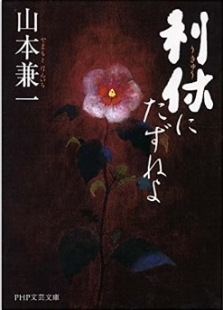
（著）山本兼一、PHP研究所、2008年10月24日
本作品は「人生の侘び寂びを深く考えさせられる本」である。
特に男性の心情が見え隠れしている作品である。
なぜなら、生涯想いを寄せた女性を心の中で引きずっている利休と出会えるからだ。
とても新鮮な感じがしたのは私だけであろうか？ 著者が新しい利休を人間らしく創作した部分なのかもしれないが、利休の人間（男性）らしい感情はとても身近に感じることができた。その理由としては、男性の生涯には、必ず思い続ける女性が存在するという大前提の視点から書き上げているところだ。また、視点を変えてみると、「利休はなぜ切腹を命じられたのか？ 利休は何を守ろうとして信念を貫き通したのか？」などについて深く考えさせられる作品でもある。その答えは決して一つではない。
いずれにせよ、自らの命をかけてまで成し遂げなければいけない確固たる強い決意をもった利休の意思を感じざるを得ない作品といえる。
■あらすじ
利休が切腹を命じられたときに時間が遡る。
利休と残された時間の中で、妻・宗恩は、これまで利休の心の中で生きていた女性の存在を感じていた。
そして、妻は利休に尋ねた。利休は驚いたが、咄嗟に否定してみせた。真実については妻にはいえなかったからだ。
利休の心の中には常に想いを寄せた女性、忘れもしない女性が存在していた。
だからこそ、その形見（緑釉の香合）を肌身離さずもっていたのだ。
妻は、利休が最後まで誤魔化したことが辛かったが、もうすべてを理解していた。
時代背景としては、信長の時代から秀吉の時代に移り変わっていくまさにその時期、利休は秀吉の茶頭として召し抱えられた。
利休は権力者の側近として、茶会を任され、秀吉を側面的な所から支える役割となった。
その結果、利休も権力者の一人として、周囲から見られるようになっていった。
あるとき、利休は秀吉から黄金の茶室を作ることを命じられたが、それは、利休の求めている茶室、茶道とは違っていた。
しかし、秀吉の命令には逆らえない。秀吉に気に入ってもらえるように派手な黄金の茶室を作ったのであった。
ちなみに、利休が目指す侘茶とは、枯れた世界にこそ美しさがあるという世界であった。そこで黄金の茶室では、利休の目指す侘茶の世界を取り入れたのだ。その具体的な方法として、黄金の茶室では入り口を狭くしたことであった。それは、利休の侘茶の世界では、たとえ権力者だとしても頭を下げて茶室に入ることが大切だと考えていたからだった。
秀吉は、その黄金の茶室が完成するととても喜んでいた。
秀吉は、利休の審美眼に一目を置いていた。だからこそ、茶会の取り仕切りをすべて任せていたのだった。
利休を見ると、何をしても一流に見えたからだ。
つまり、裏を返せば、利休の審美眼に対して嫉妬している秀吉が存在したわけであった。
晩年、秀吉と利休の近すぎた人間関係の悪化には、利休への審美眼への嫉妬があった。それは秀吉のプライドをかなり刺激したのだ。そのため、秀吉は利休の長所すべてを含めて認めることができなくなっていった。天正19年（1591年）2月28日、利休は京都聚楽第利休屋敷で切腹をさせられた。利休は死をかけて何を守ろうとしたのか？ それは、利休の生き方、考え方しかいえないと思える。そして、利休の死後、彼が命をかけて守り抜いた茶道の魂はその後も生き続けていったのである。
なお、女性同士の闘いはというと、利休の死後であるが、妻・宗恩は利休が想いを寄せた女性の形見を投げつけて壊したのであった。
■構図
秀吉VS利休
権力VS己の生き方
妻VS利休が生涯を通して想っていた女性
■考察
まず始めに、権力者との間における人間関係の距離感はとても難しいことである。たとえば、権力者と自分には信頼関係があり、ある意味対等と勘違いをしていると、権力者は突然嫉妬を感じはじめるかもしれない。特に部下の中に、優れた才能をもつものが、権力者へ教える立場となるとするならば、より人間関係が近くなることで立ち回りがかなり難しい立場になるだろう。たとえば、最初は権力者の信頼が厚いとしても時間が経つにつれて、常に気を抜けない立場に置かれていることを自覚するべきである。権力者の側近になれば、周辺は権力者と同等に見てくる。そのため接近してくることが災いの始まりとなる可能性もある。また、権力者からみれば、部下が権力をもってしまうように見えることで、権力者である自分を無視して何事も決めているという大きな誤解を与えかねないことも考えられる。このようなことを本作品を読んだ後に感じたのは私だけだろうか？ 秀吉と利休のようなことが再現されないためにはどうしたらよいのか考えておく必要がないだろうか？
事前に考えておくべきことがあるとするならば何があるのだろうか？
自分に接近してくる人物は、全く紹介者がいないのか？ それとも誰かが保証してくれる人物なのか？ について最低限は確認する必要はないだろうか？ また、権力者が嫌がることは何なのか？ 何に対して強いプライドをもち、もしかすると嫉妬を与えてしまうのかということも、事前にアンテナを張り理解しておくことが必要となる。常に情報収集を怠ることなく、これに基づき予防線を張っておくことが身を守る方法となるのだろう。
第二点目になるが、利休の新しい個性である男性としての本能について考えてみたい。これは著者が意図的に新たな性格を書き加えたところであるが、本作品の中では、利休は想いを寄せた女性を生涯引きずっているわけである。しかも、利休の妻はそれを知っているのであるからして、今日の日常生活の中で生きている男性諸君にもかなり当てはまるのではないだろうか？ 男性と女性の決定的な違いとは、過去に付き合った異性に対する対応である。たとえば、現代の言葉で表現するならば、「男性は過去愛した女性をフォルダーごと分けて残しておく動物である。しかも、別れた女性はいまも自分のことを愛していてくれていると勝手に思い込んでいる動物であるそうだ」一方「女性は上書きをして過去を消去してしまう動物であるそうだ」つまり、男性が過去愛した女性を引きずるのは、この言葉からも理解できる。利休のように、想いを寄せた女性を死ぬまで忘れないことは男性の本能なのだ。したがって、本作品の中の利休の本能に共感できる男性はかなりいたのではないだろうか？ と考えられる。
第三点目になるが、秀吉がみせた男の嫉妬について考えてみたい。秀吉の若い頃は時代背景が戦国時代であり、常に外敵がいたため、味方に対しては寛大な気持ちがあった。
しかし、天下は秀吉の時代となり、秀吉も歳を重ねていくと、共通の敵が不在となるため、身内に厳しくなり、不安に陥っている。
つまり、人間不信に近いものになっていったわけである。だからこそ、権力を自らの子へ繋げるために、理不尽なことは何でもやってしまった。これらを参考にして考えてみると、晩年の秀吉は確かに狂気の時代を過ごしている。しかも、性格があれだけ大きく変わってしまったことから考えるならば、もしかすると秀吉は認知症になっていたのかもしれない。
とはいえ、男の嫉妬から始まる理不尽な切腹は、秀吉の時代の終焉を早めたことには違いない。リーダーが行うことは、常に正しい倫理感に基づいた大儀名目がなければ人はついていけなくなると考えるからだ。
第２章：『ジェノサイド』
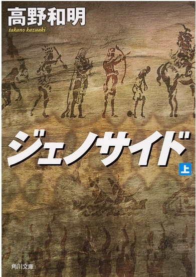
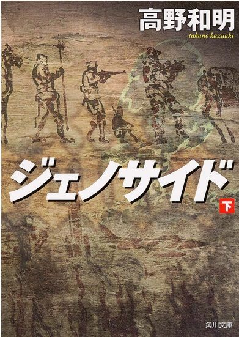
（著）高野和明、KADOKAWA/角川書店、2011年3月30日
本作品は、「第65回日本推理作家協会賞長編及び連作短編集部門受賞作」、「第2回山田風太郎賞受賞作」、「2012年版このミステリーがすごい：1位」、「2011年週刊文春ミステリーベスト10：1位」になった作品である。簡単に説明をすれば、ひとつの時空間の世界で同時多発的に物語が始まっていき、舞台は地球規模で展開する。米国、日本、コンゴ共和国が主な場所だ。登場人物の人種も多様で、それらの人物たちはそれぞれ専門家であることに特徴がある。
たとえば、創薬、数学、歴史、軍事などの専門知識が、物語の始めから伏線として地雷のように埋められている。そして、物語の後半からは高揚感と躍動感にあふれてきて一気に伏線の意味が解けていき読破していける。それはまるで、スピルバーグの映画である『スター・ウォーズ』、もしくは、ブルース・ウィリス主演の『ダイハード』を観ているかのようなハラハラドキドキした感覚に似ている。
■あらすじ
イラクで傭兵をしている元グリーンベレーのジョナサン・"ホーク"・イエーガーは、民間軍事会社に勤めている。彼は難病の息子をもっている。息子のために南アフリカ共和国へいき、他の3人と合流する。そして、コンゴ民主共和国へ入る。目的は、すでに未知の病に侵されているピグミー族の掃討作戦のためだった。ピグミー族には新人類（アキリ）がいる。しかし、新人類（アキリ）に同行している人類学者・ピアースに米国大統領バーンズが『人類絶滅の危機』を防ぐために『ネメシス作戦』を発動していたことを聴かされる。人類学者・ピアースはピグミー族の新人類（アキリ）の警護を依頼する。そして、日本へ行けばイエーガーの息子を治療できる新薬が完成する可能性があることを聴かされる。イエーガーは日本へ新人類（アキリ）たちとともに向かう。
一方、日本では、古賀研人（創薬化学の大学院生）の父親が亡くなり葬式をしていた。葬式に参列した父の知人である菅井から『ハイズマン・レポート』のことを聴いた。その後、葬式から5日過ぎたとき、亡くなった父親からのメールが突然届く。古賀は、そのメールに書かれたメッセージを実行していった。それは、父のPCの中にあった『GIFT』という極めて高度な創薬ソフトを動かし新薬の開発をすることであった。この新薬こそイエーガーの子供も治癒できる薬だ。そして、イエーガーと古賀は日本で......。
結論は読まれた人たちの楽しみということにしておきます。
■構図
人類VS新人類
■考察
私は本作品の底辺に流れている思想に、常にダーウィンの『進化論』を感じていた。この進化論を骨格として物語の細部を考えたものと勝手に推測している。
なぜなら、構図は、新人類対人類であるからだ。しかし、そこには微妙にこの進化論が的確にあてはまってはいないのだ。
進化論では環境における適者生存を語っているが、本作品の中では、適者生存ではなく、進化できない人類が生き残り策を考えて新人類を抹殺しようと攻撃をしているのである。
このことから、人類は究極の自己都合優先の考えで行動をしている。
つまり、この思想こそ、人類の究極のエゴイズムである。
著者はもしかすると、人類こそ愚かな動物といいたかったのかもしれない。
この醜いエゴイズムの塊をもつ人類こそ、無差別な殺戮を繰り返している動物だと考えたのだろう。
人類の歴史をかえりみれば必ず「ジェノサイド」（集団殺害）は起こっている。
本作品は人類の愚かな行為に対する警鐘でもあり、また、私たち人類が過去の歴史から過ちを学び、そして、一人ひとりが心底考えることから、国家観だけの視点から物事は動くのではなく、個人の思想が国家を動かす原動力となることを暗示してくれているように思えた。
第３章：『遺伝子医療革命』
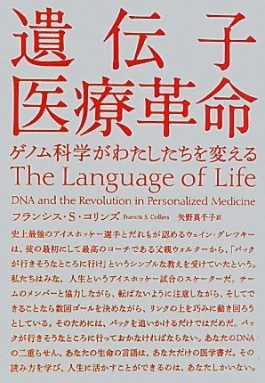
（著）フランシスＳ，コリンズ、（訳）矢野真千子、NHK出版、2011年1月25日
本作品は日本では平成23年1月25日に発刊された。
読み終えたあとには、強烈なインパクトが残った。
なぜなら、この書籍には近未来の医療の姿が描かれていたからだ。
『遺伝子医療革命』は読んで字のごとく医療そのものに革命をもたらすものであるがために私たちが知っておくことで損をすることはない。近未来は確実に近づいている。
■経緯と展望
ジェームズ・ワトソン、フランシス・クリック、モーリス・ウィルキンスらにより2重螺旋が発見されてから50年後にあたる2003年において、人の遺伝子は完全解明された。遺伝子解析が推進された背景には、ヒトゲノムプロジェクトが大きく関与していた。
これは1980年代後半に立案されたプロジェクトの成果である。
近未来における医療の大きな転換期となりパラダイムシフトといえるものである。
遺伝子が解明されたことにより、個別化医療の方向へ薬剤の開発が行われるようになった。
そして、これに伴い必要な診断薬としてコンパニオン診断薬が併せて開発されるようになった。
主に抗がん剤（分子標的薬）領域で同時開発をしているコンパニオン診断薬は、副作用発現、遺伝子変異などの発現レベルを検査するものであり、現在日本では同時申請承認ができるようになった。
遺伝子解析の進化とともに個別化医療へ発展していくわけであるが、日本では未だ大きな問題がある。それは遺伝子解析におけるデータ保護に関して法律が十分に整備されていないことである。現在、国は遺伝子解析における法律の整備に取り組んでいる。
以上のことをまとめるとこうなる。
Ⅰ
）2003年にヒトゲノムが解読された。
Ⅱ
）ヒトゲノムの解読により、遺伝子解析が実施できるようになった。
たとえば、よくある病気の遺伝子リスク因子が段階的に発見されている。
そのため、個人が特定の疾患に罹患しやすい家系かどうかを把握できるようになった。
Ⅲ
）コンパニオン診断薬の普及も手伝い、今後は個別化医療の時代へ向かっていく。
＊ ここで補足させて頂きたいことは、現在遺伝子解析にてアプローチしている疾患は、がん、感染症、神経変性、精神障害、老化などである。そして、遺伝子と疾患の関係が解明できることによって、たとえば、治療に使われる薬剤に関しては、個人ごとの投与量、頻度の多い副作用などを推測できるようになっていく時代へ変わっていく。すでに抗がん剤領域では、そのような治療法の時代に順次入っている。
第４章：『テンペスト』
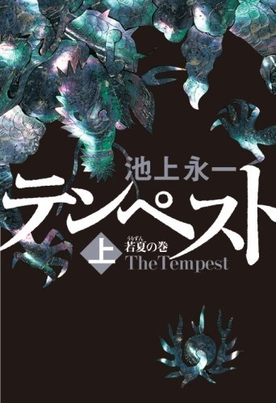
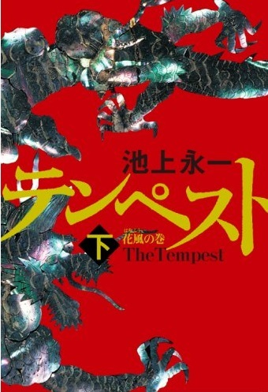
(著)池上永一、角川グループパブリッシング、2008年8月31日
本作品は、琉球王国が文明の衝突から近代化の波にのまれていく姿を語った作品である。
著者は男性である。そのため、世俗的なところも場面も多々あり、時代背景から男性社会中心の中で女性がどのように生きていたのか？ という俯瞰的な視点で見ると違った角度から主人公の生き方を見ることができる。まるでジェットコースターのような生き方であり波乱万丈であった。女性でありながらも、役人（男性）として与えられた役割と仕事をしっかりと処理したことにより、琉球王国に貢献したことは素晴しいことである。当たり前のことだが能力には男女差はないということが理解できる。とはいえ、時代は過去であり女性が活躍できる時代ではなかった。このような時代の中、一人の女性の生き方として自らの人生を国家に捧げたといえる。また男性として働いたところでは、外交では、国家の難局の場面において、どのようにして対処していくのかという方針（戦略戦術）をしっかりと考えていた。
本作品の中では、外交の難しさとは、同様に人間関係の難しさにも通じるところがあると思った。すなわち、交渉窓口は複数のルートを確保しておくことが重要だ。なぜなら、いざというときには、水面下の交渉が一本だけはではリスクとなりうる。ネゴをするには、相手の内部にこちらのことを理解している人間関係が複数必要となるからだ。
交渉の成果は、いかに相手の内部から理解者を増やし、また、いかに妥協点を見つけるかにかかっている。
■あらすじ
＜ 物語の時代背景＞
当時の世界は、産業革命を起こした英国を始め欧米諸国が、蒸気船で世界へ出て行き、植民地化を進めていた時代である。
日本では幕末から明治維新にあたる時代だった。
このような背景の中、琉球王国は大国清と薩摩との間で上手く外交の舵取りをしていかなければならなかった。
この二カ国間の外交の中で、欧米諸国は琉球王国へ力（威嚇）による外交を求めてきたのだった。
なぜなら、琉球王国は、欧米諸国から見ると、地理的に補給基地として最適であったからだ。現在もその地理的な魅力は変わらない。
＜ 物語の展開＞
主人公は、女性でありながら男性（宦官
）として生きることを決め、幼いころから琉球王国の評定所筆者主取
（宦官）を目指し、ついにはその地位を獲得し国の舵取りを行うまでに至った。しかしながら、清国から来た人間により女性であることを見抜かれてしまい、騙され罠にかかり、地位を剥奪され、八重山（石垣島）へ流刑されてしまう。まるで天国から地獄に落とされたわけである。そして、八重山へいくと米国の艦隊や英国が八重山近くの島の人々に対して、威嚇しながら強制的に服従させている場面に遭遇してしまった。
元評定所筆者主取として、その行為をどうしても許せない。何とかして琉球王国へ連絡をしたいがその手段がない。そこで何が何でも戻るルートを探していたところ、気がついてみたら女性として琉球王朝へ戻るルートが見つかった。しかし、それは琉球王側室としての役割だった。嵌められていたと後から気づいたが、それでもどうしても琉球王国の危機を伝えることができることを最優先した。
一方、琉球王国をとり囲む時代背景は、日々厳しくなり、琉球王国存続の危機にまで追い詰められていた。それはペリー提督率いる艦隊からの力（威嚇）による外交だった。ペリー提督が要求した内容は琉球王国では、到底受け入れられない内容だ。このため、現状ではどのようにしたらよいのか？ 琉球王国では、この難易度の高い宿題の回答を要求され窮地に立たされていた。下手をすると米国の従属国になってしまうからである。そこで琉球王が考えたついたことは、過去何度も琉球王国を救ったあの男性を呼び戻すことであった。
いま彼は八重山にいる。そして、琉球王は元評定所筆者主取だった男性を呼び戻した。
しかし、琉球王は知らない。まさか元評定所筆者主取だった男性と琉球王側室が同一人物であることを。
彼女は、日中は男性になりすまし行政を取り仕切りながらペリー提督と交渉を行っていた。
そして、ついに交渉は成立した。琉球王国は従属国の危機から逃れることができた。
それは一時的な回避策であることは取り囲む情勢からみれば理解できる。
こうして、この難局を乗り越えた後に側室として王の子を身篭ったのだ。自らは一旦身を引いていくことを考えたが、その過程の中で、実はこの評定所筆者主取（男性）が実は女性であり、琉球王の側室であることや、その女性が行政の舵取りをしていたことをその彼女の実兄に暴露されてしまった。
このことにより、すでに琉球王の子を身篭っていたが失踪し一人隠れて王の子供を出産することになった。静かな生活の中で子育てをしていた。
時が過ぎて、王の子供の成長とともに琉球王国の終焉はいよいよ近づいていく。すなわち、日本の近代化とともに、琉球王国は1879年沖縄県となり崩壊したのだった。
■構図
旧文明VS新文明
■考察
本作品を読んで学べることは、どの時代、どの仕事、どんな人間関係でも、外交力は重要なことである。常日頃、海外の国々と親しく交流をもつことで情報が得られ、信頼され交渉ができる。この人間関係のサイクルを確立させることでインテリジェンス（諜報機関[収集解析]）は機能する。
そのためには、個人の能力を高めて、教養を高める努力を積まなければならない。なぜなら、たとえ趣味だとしても、それが抜きん出ていることを相手が認めるならば、信頼関係が構築されるからだ。つまり、相手も人を選んでお付き合いをしていることを常に忘れてはいけない。
また、外交力を高めるためには、情報の収集解析を専門に行うインテリジェンス（諜報機関）を組織でもつことが重要である。たとえば、会社でもクライアントの情報をいち早く得ることにより、事前に交渉の準備をすることができる。
つまり、現在私たちが活動しているこの世界は、まるでオセロゲームと同じなのである。もしも、国家、企業、個人が「井の中の蛙」状態であるならば、インテリジェンス部門が機能せず、必ず滅亡への道へ向かっていくことは歴史が証明している。
第５章：『掏摸 』
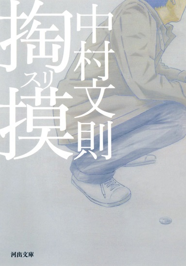
（著）中村文則、河出書房新社、2013年4月8日
「掏摸
」は世界的な新聞「ウォールストリートジャーナル」において、2012年度ベスト10小説に選ばれた作品である。社会の闇（暗黒）を描いた世界は、作者が旧約聖書から影響を受けた構図に基づいている。
犯罪小説というジャンルは個人的にはあまり好まないのであるが、本作品を読むことで掏摸の犯罪心理を少しだけ理解できるようになった気がする。
なぜなら、裏を返せば、掏摸から身を守るために役立つようなことが書かれているからだ。これにより、ほんの少しの可能性として、私たちが掏摸を防御できるかもしれない。また、本作品の大きなテーマの一つでもある「人間の運命と何か？」について改めて考えさせられる。きっと本作品を読めば何度でもいつでも人生の仕切りなおしができるきっかけとなるであろう。
■あらすじ
掏摸の男は、幼いときからはるか遠くにある塔を眺めていた。
いつものように仕事（掏摸）をして稼いだ帰り、偶然にスーパーで万引きをしている子供と母親に遭遇した。掏摸の男は親子に近づき「お店の人間にばれている」と突然話かけた。親子は驚き万引きをやめた。これがきっかけとなり、この親子と不思議な縁をもった。
掏摸の男は良心をもっていたために母親に余計な忠告をしてしまった。いつもならば関わりをもつことはありえない。
「生活のために子供に万引きをさせるのはやめるべきだ」
と男はいった。母親からは息子に万引きをやらせないことの交換条件として生活費である現金を手に入れた。
その後も掏摸（スリ）の男は東京で相変わらず仕事（掏摸）をしていた。
ある日、掏摸をしていた最中、手を捕まえられそのままつれて行かれた。目の前には、以前一緒に仕事をしたことがある組織のリーダーが待っていた。
本来ならば東京から離れていることが男にとって安全だった。
このリーダーは凶暴・冷酷・緻密な性格の人物だ。リーダーは、掏摸の男に「貴族のノート」の話をした。それは、貴族が完全に描いた人生は、少年の人生そのものであり、事実そのとおりに少年の人生は現実になり終焉を迎えたという内容だった。
そして、掏摸の男は、リーダーからある仕事を依頼された。
これを受けなければ、親子を殺す。もしくは受けなくても失敗しても殺す。
「これがお前の運命だ」といわれた。依頼された仕事とは、難易度の高い三つの仕事であった。そして男はその三つの仕事をやり遂げた。
成功させた後、掏摸の男は自由になれると考えていた。
リーダーに呼ばれ会いにいく。リーダーが視界に入ったとき、突然腹に熱を感じた。何か体に打ち込まれた感じだった。力が抜けた。倒れた。激痛が走った。意識が混濁していく中で、リーダーは、「お前は運命を信じるのか？ お前の運命は俺が握っていたのか？ それとも俺に握られることがお前の運命だったのか。そもそも、それは同じことだと思わんか？」といい放った。意識が薄れていく中で掏摸の男のポケットの中には500円玉が入っていた。リーダーから奪ったものだ。このまま死ぬことを覚悟したとき、かすかな意識の中で、人の話声が聞こえた。人影が見えたときに、そのコインを投げた。ここで物語は完結している。最終的にどのようになったのか？ もしも、ご興味があれば引き続き姉妹編『王国』を読んでいただければ知ることができる。
■構図
神話（古来の神話に見られる絶対的な存在）VS物語（運命の下で動く個人）
■考察
まず始めに、本作品は社会の闇（暗黒）の世界を描いている反社会的な内容である。
暗黒の世界というと私の中では映画『スター・ウォーズ』を思い出す。
物語は、かつてのジェダイの騎士アナキン・スカイウォーカーが暗黒面の世界に取り入れられダーズヴェイダーとなり息子であるジェダイの騎士ルーク・スカイウォーカーとの戦いを描いていた映画だった。この映画と小説『掏摸』の共通点をあえてあげるとするならば、「運命とは何か」ということだ。実際の人生の中でも、誰しも運命というものを考えさせられる場面に遭遇するものだ。「運命とは何か」ということを改めて考えてみると、大きく三つに分類できると考えている。
Ⅰ
）受動的に人生を生きるパターン
これは神が作り上げた人生を人間は生きているということにすぎない。
つまり、そのように考えることで人生の分水嶺を神が試練もしくは与えた道として捉えて生きていくものである。
Ⅱ
）能動的に人生を生きるパターン
自らの役割や使命感を考え、自らの意思をもって人生を切り開いていくことである。人生の中での役割を常に考えて、その目的を達成するために最善を尽くす。
Ⅲ
）合理的に上記二つを組み合わせたパターン
現実に生きている人たちは、実はこのパターンの人たちが多いと考えられる。
このパターンを使い分けることが、人間の生き方が楽になる手段だと考えている。たとえば、人間が人生の中で運命の選択をしなければいけない場合ある。 具体的には、受験、就職、結婚、転職など、あらゆる場面が考えられるが、それらの人生の分岐点には、必ず成功と失敗に結果が分れる。この場合の結果に対する人間の心理状態にこそ、上記二つを組み合わせたパターンとして、人間は 無意識に遂行していることが多いのではないだろうか？
つまり、Ⅰ
は「なるがままに」という対応になり、自然の流れにまかせることになる。
Ⅱ
は「忍耐で我慢して努力をする」という対応になり、どこまでもやり遂げるために頑張ることになる。
しかし、人間は人生の中で成功も失敗もする。だからこそ人生なのであるが、その場面によって人間に都合のよいように思考パターンを使いわけており、その結果を運命だと理解していくのではないだろうか？
第二点目になるが、運命の分岐点を人間が判断した結果、幸運・不運に見舞われた究極の人間の心理状況を考えてみた。
【結果が幸運だった場合】
成功した人間は、自らの運命に対しては、
Ⅰ
）能動的な人間ならば「自分は何かをもっている」と考える可能性が高いのではないだろうか？
Ⅱ
）受動的な人間ならば「神が選んでくれた」と自らが選ばれた人間だと考えるかもしれない。もしくはこの幸運は、計画的、継続的な準備による成果と謙虚に考える人もいるだろう。
しかし、いずれにしろ幸運という結果があれば、人間を取り巻く環境が大きく変わる。また、成功という幸運が訪れることで、大きく取り巻く環境が変わり、ある部分では不幸になるところがあるのかもしれない。
【結果が不運だった場合】
失敗をした人間は、自らの運命に対しては、
Ⅰ
）能動的な人間ならば「現実を受け入れることで立ち直るきっかけを得ることを必然的に求めていく」のではないだろうか？
つまり、自らがこうなってしまった結果を悲しみ、悲嘆にくれるわけであるが、やるべきことを尽くしたという気持ちがあれば、それを運命として受け入れられるだろう。そうすることで、気持ちの整理ができ次へのステップへ向かうことができるようになるだろう。
Ⅱ
）受動的な人間ならば「神が与えた試練」だと考えるのではないだろうか？
以上のように、運命の結果から人間の置かれた心理状況を考えてみたが、普通の人間の場合は、「Ⅲ
、合理的に受動的＋能動的を組み合わせたパターン」となるケースが多いと考えられる。
つまり、人生には大きな波があり、その度に一喜一憂をしているのだが、人間は、置かれた状況により考え方を変えて生きているのが常であろう。
しかし、状況に応じて判断できる知見がどれだけ高いのかという基礎がなければ、状況に応じた最善を選ぶことはできないのであろう。
第三点目になるが、「運命とは何か」ということの結論を考えてみた。
どのような運命の選択肢を選んだとしても、また、どんな時代背景があろうとも、人間として生まれた限りは運命に左右されることは不可避である。そこでは、常に自分が前向きに生きることを考えることしかなく、人生を全うすることが重要であろう。
また、本作品のように人の運命を握るということが、極端に描かれていると考えられたが、現代社会においても同様だ。たとえばサラリーマンの世界である。出世を人生の最も重要なプライオリティとして考えている人であれば、出世=運命を上司に預けているとも考えられる。しかし、その逆もあり、もしすでに管理職ならばその部下の運命を管理しているということになる。いまさらながら、年齢には関係なくご自身の「運命とは何か」について改めて考えてみることは大切なことではないだろうか？
余談：
運命をどのように切り開いていくのかということについて50歳を超えたら以下のことも考えてみる価値がある。
健康寿命を当初の目標として考えてみた。（ご参考までに）
Ⅰ
）健康寿命（男性71歳：女性74歳）から逆算した限られた時間を計算する。
Ⅱ
）残りの時間で何を為すべきか人それぞれの価値観に基づいて為すべきことを見つける。
Ⅲ
）為すべきことが見つかり、やり遂げている最中で健康寿命を過ぎたならば幸運であると考える。
さらに継続して成し遂げることは素晴らしい運命を自らの力で築きあげる。
以上のようなことから、新しい人たちとの出会いと仕事をすることを愉しいと考えられるならば、限られた人生の時間を有効に使えるものであろう。
第６章：『ねじまき鳥クロニクル』
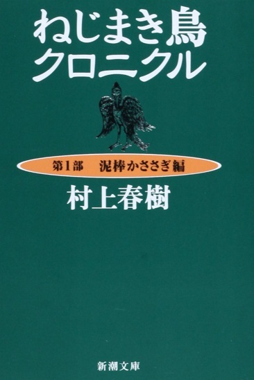
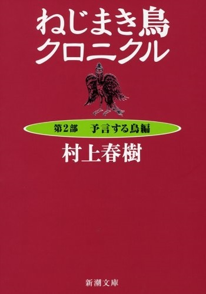
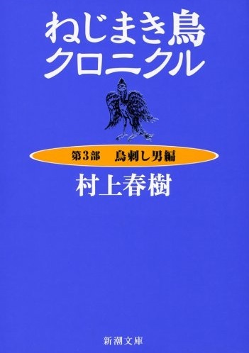
（著）村上春樹、新潮社、第一部、第二部：1994年4月12日 第三部：1995年8月25日
村上春樹氏の『ねじまき鳥クロニクル』を何十年かぶりに再読したが、今回は「あらすじ」は書かなかった。なぜなら、読者諸兄はすでにお読みになっていると考えたからだ。
したがって、本作品について私が再読した後、新たに感じたところを書いてみた。その中には、過去読んだ分析本の内容を少しばかり記憶に残っていることも書いた。そして、また読者諸兄がハルキストなのか？ それとも、アンチハルキストなのか？ そのどちらに属するのか？ という分類できることを書いた。これを使い、ぜひご自分の立ち位置を確認していただければと思う。村上春樹氏ほどの世界的な大作家になると、何を書いてもファンもアンチファンも必ず存在するものである。
■構図
人間の中に潜む善VS人間の中に潜む悪
現実の世界VS非現実の世界
■考察
本作品は村上春樹氏がデビュー以降の作品の中でも最も長い小説である。
まず始めに、「あらすじ」を、ただ一言で申し上げると、「失踪した妻（クミコ）を探す旅」である。しかしながら、読み終えるとやはり理解しづらい内容であった。
なぜなら、現実の世界と非現実の世界が交互にリンクしているからだ。その繋がりとは、精神世界（スピリチュアル）の繋がりであり、ここを理解できなければストーリーを継続して読めなくなってしまうからである。
もし現実を生きていることに比重を置いている方が読者であれば、すでに思考回路が現実主義者になっているために、非現実と現実とがなぜ繋がるのか大きな違和感を生じてしまうだろう。先にも申し上げたが、私は30代半ばに本作品を読んだ経験をもっているが、その時代の感性といまの年齢の感性には大きな違和感が存在していることに気がついた。
この年齢になると、現実を長く生きてきた分、やはり再読すると、まるでＳＦ小説を読んでいるような気分になってしまう。この理由として考えられることは、社会人としての時間的な長さが感性を鈍らせたからだ。おそらく、このようなジャンルの本を楽しめる人は、想像の世界と現実の世界をバランスよく生きている人であろう。もう少し詳細に考えてみると、現実の世界で生きるということは、確かに社会人であれば、目標を与えられ、もしくは自らが考えて、結果を導き出すために、何をどのような計画をもって実行していくのかというPDCAサイクルの思考回路を作り上げられる。さらに追い打ちをかけることは、何事もエビデンスは？ という考え方で仕事を進めていくわけである。これは現実の世界の仕事の成果を出す進め方であるため、想像力を養うことだけで結果は出せないということだ。しかし、一方では人間的なバランスを保つためには、芸術の世界に触れることも柔軟性や想像力を維持するために必要なのだろう。もしかすると、本作品を一番楽しめる最適な年齢は学生時代なのかもしれない。次に話は変わるが、村上作品が、もしアニメ作品として世の中に出していただけるならば、前評判はかなり高くなりそうである。テレビならば、視聴率も高くなるのではないだろうか？ その後、アニメ版の映画も制作できるようになれば、それは楽しみが増えることになるだろう。私は、小説だけの村上作品ではなく、早くアニメになった村上作品を観てみたいと心より願っている。
第二点目になるが、本作品の中では精神世界へ踏み込んで書いていると思われる箇所がある。
以前読んだ解説本に書いてあったことを少しばかり記憶しているが、内容は明確ではないかもしれないが書いてみたい。
たとえば、本作品の中では、井戸の水が重要な意味を示している。つまり、井戸の水は人間の心を表しており、井戸の水が多ければ人間の心は満たされていることになる。たとえば、井戸の水が多ければ人間の心は満たされている。そして、人類の歴史を振り返れば、時代により、暗黒の時代、繁栄の時代を繰り返しているわけで、栄枯盛衰というか、時代ごとに井戸の水の量が変化しているわけである。ということは、井戸の水の量をみれば、その時代に生きた人間の心を満たしている時代なのか、そうでないのかがわかることになる。
第三点目になるが、井戸は本作品の中では時代を超えて人間同士の心と繋がっている。
主人公である岡田トオルは井戸の中で繋がり、また夢の世界でも多数の人間と交流をしている。それらは非現実の世界である。しかし、現実の世界と非現実の世界の中を自由に交互行きかう場面がある。これは井戸の存在が人間の深層心理を描いていると考えられる。
つまり、異次元において人間の心が繋がるということは、テレパシーのようなものに近いのかもしれないが、同じ気持ちを共有化することにより、もっとお互いに理解し合える機会となる。本作品の中でも、悲しいとき、辛いとき、嬉しいときには、同じ気持ちを共有化していると思われる。そして、人間にとっては、同じ気持ちを共有して共感できることが唯一心の支えになり、相互理解による精神的な平和が得られるのかもしれない。さもなければ、事実を知っているがために、心を閉ざしてしまう傾向になるのかもしれない。兎に角、現実の世界と非現実の世界が繋がるということは、本作品の大きな特徴である。
第四点目になるが、読者諸兄がハルキストなのか、アンチハルキストなのかを確認する方法を考えてみたので試して頂きたい。これを考察に書いたことはお許し願いたい。あまりに単純なので、笑ってしまうかもしれないがチェックリストは以下である。
たとえば、村上春樹氏の物語の結末は「読者の想像力に依存させる」ことが多い。このような結論がお好きな方ならば、ハルキストになるものと考える。
また、お嫌いならばアンチハルキストにもなると考える。
さらにいうならば、読み終わったあとに残るあの不思議な残像感というのか、もし「もやもや感」「消化不良」という気持ちが残るならば、どちらかというとアンチハルキストに近いと思われる。
これとは反対に、もし「スッキリ、爽快感」があるならば、あなたはハルキストであると考えられる。
このような簡単な方法であるが、自らの立ち位置を確認することはとても面白いことだと考える。
第五点目になるが、村上春樹氏のこれまでの作品の中では、三作品ほど『ねじまき鳥クロニクル』と同じような物語の手法で書いた小説がある。
Ⅰ
）世界の終りとハードボイルドワンダーランド
Ⅱ
）ねじまき鳥クロニクル
Ⅲ
）海辺のカフカ
基本的な物語は、二つの違った世界がパラレルに進展して最後に一つの世界に繋がるひとつの世界を描いている作品である。
この当時の日本では、このような物語の手法は使われていなかったと思われる。
「世界の終りとハードボイルドワンダーランド」が発刊された時代にはとても大きな衝撃を与えたはずである。
村上春樹氏がデビューするまで日本の小説といえば、ほとんどが私小説で、主に主人公は一人称、さもなければ三人称を中心にした物語で展開されていた時代だった。
つまり、村上春樹氏の登場は、文壇界において、まるでビートルズのような役割を果たしていただのではないだろうか、と考える。
たとえば、先ほども書いたが、もしかすると、欧米小説の構図を初めて用いたのは村上春樹氏ではないだろうか？ この理由としては、確かデビュー当時は海外の小説ばかりを読破していたとインタービューで答えているものを読んだ記憶がある。
第７章：『火星の人』

（著）アンディ・ウィアー、早川書房、（訳）小野田和子 2015年12月8日
SF小説『火星の人』（原題：the Martian)を取り上げる。著者はプログラマーでありながら、幼いころからSF小説の大ファンだったアンディ・ウィア－
である。
本作品が世の中に出るまでの経緯がとても面白い。
きっかけは、個人のWEBにて連載をしていた。それが好評を呼び、読者からの強い要望により2011年Kindleで出版となった。その後、SF部門トップになり、出版社から書籍として発刊に至った。映画「オデッセイ」の原作はこのSF小説『火星の人』である。
次に、火星の小説という視点で語りたい。
火星を舞台とする有名な小説は数多く、以下が代表作品である。
たとえば、
Ⅰ
）火星年代記
Ⅱ
）ミッション・トゥ・マーズ
Ⅲ
）トータルリコール
Ⅳ
）レッドプラネット
ちなみに火星の通称は、レッドプラネットと呼ばれている。
本作品はサバイバル小説でもあるが、同じサバイバル小説の視点でとらえると、日本におけるサバイバル小説で著名な作品は吉村昭氏の『漂流』である。本内容は、江戸時代に船が難波し伊豆諸島の鳥島へ漂着した史実をモチーフにして描かれている。
■あらすじ
有人火星探索隊は、3度目のミッションを遂行するために火星に到着した。
しかし、到着6日目に猛烈な砂嵐のために離陸しなければならない状況になった。
探索機に戻るとき、植物学者/メカニカルエンジニアのマーク・ワトニーは折れたアンテナが腹部に刺さり砂嵐の中へ飛ばされてしまう。
生命反応が送信されないため死亡（犠牲者）と判断されてしまったマーク・ワトニー。
残された船員は船長の指示により火星から離陸をする。
この物語はこのような状況から始まるマーク・ワトニーのサバイバル小説だ。
マーク・ワトニーが生き残りをかけて、知識をもって計画立案して実行して乗り越えていく。その生死をかけた姿はとても素晴らしく感動を与える。
また、宇宙飛行士がもつ知識の深さ、知識の幅広さ、人間性の高さを感じる内容である。
■構図
Ⅰ
）人間の絶望感VS人間の生命力
Ⅱ
）人間が団結したときの力VS人間のエゴイズム
■考察
まず始めに、本作品の文章構成について述べたいと思う。
構成は、マーク・ワトニーが語る一人称（ログエントリー）と複数視点の三人称から成り立っている。このために、作品は立体的に描かれている。
特に、一人称で語るマーク・ワトニーの言葉はとてもユーモアに溢れており面白い。
アメリカ人特有のユーモアを感じる。しかし、私が疑問を感じたのは、人間とはこれだけ生死の境に追い詰められていながらも、ユーモアを発揮できるのかということである。いい換えれば、覚悟を決めた人間の心理とはこうなるものなのか？ という、その開き直りの凄さを考えさせられたのである。さもなければ、薬剤の開発時の治験と同じように民族性の問題が存在していることを理解するべきかと思ってしまったわけである。
第二点目になるが、本作品のテーマは、「人間は一致団結すればどんな困難でも乗り越えられる」ということだ。なぜなら、本作品の中では、主人公であるマーク・ワトニーを助けるために、巨大組織であるNASAが一つにまとまる事ができたからだ。
平常時ならば決してこんなことは起こらないであろう。
NASAとは大組織であり、セクショナリズムが強く、組織がバラバラであると予測できる。
なぜなら、どの国のお役所も会社も同様であろうが、大きな組織ほどセクショナリズムの中で権力闘争をしているわけだ。しかしながら、本作品の中では、マーク・ワトニーを助けたいというNASA全員の気持ちが一つになっていく。それはページを捲るたびにNASA関係者の熱い思いを読み取ることができる。だからこそ、きっと人間は心が一つにまとまったときにこそ、どんな困難にも立ち向かい、叡智を結集してそれを乗り越えていくことができるのだと思う。そして、その強い全員の気持ちがあれば奇跡を起こせるのである。
視点を変えれば、本作品でいいたいことの一つは、物事に対するアプローチの仕方にはさまざまな方法があり、あらゆる手段を考え、それをどのように優先度をつけて順番に解決していくのかということであろう。この前提条件になることは、最終的な価値観、目標、目的などの同じベクトルに向いていることである。このことは、物事を解決するためのアプローチは、組織の長の対処方法に依存していくこととなる。たとえ考え方が違ったとしても、組織内の多様性を認めるならば、複数のアプローチ方法を必ず メンバーに提案させ、優先度を決めて状況を打開していくことが大切である。
たとえば、ユダヤ人は、全員が賛成するならば、最後の一人はあえて反対意見を提案する習慣をもっているそうだ。そうすることで大きな難問に直面した際に状況を打開、突破できる推進力となる可能性があるわけである。
第三点目になるが、本作品を読み終えた後に、たとえば、私たちもひとりぼっちになったとき（孤独）を想像してみるとどうなるのだろか、と考えてみた。
ひとりぼっちになったとき（孤独）には、人は置かれた状況に対してどのような考えに基づいて行動をとるのか、ということは、大きく二つのタイプにわけることができると思う。
それは、「Ⅰ
）Never give up」、「Ⅱ
）Give up」である。
孤独になった場合を想像していただきたい。
「生きる」という選択肢を選んだとしても、私たちは本当に生き残るために最善を尽くすことができるのか？ それともすぐにあきらめてしまうのか？ ということにならないだろうか？ 大部分の読者諸兄は、生き残る方を選択するに違いない。
しかし、選択をしたものの、本当に生き残るためにはサバイバル術（知識を含む）を学んでいる方はどれくらいいるのであろうか？ ここが問題となるものと考えている。
私自身も何も学んでいないので心がけないといけないことを痛感する次第である。
本作品から学べるもう一つのことは、日常生活の中で日々サバイバルに関することを具体的に学ばなければいけないということであろう。
なぜこのようなことを申し上げるのかというと、私たちの身近には、必ず想定外の天災が起こる。一番可能性があることは大地震である。もし、3.11のような大地震と同様な直下型大地震が、もしも東京に起こったならばどうなるのだろうか？ いや、東海大地震、南海トラフ大地震が起こったならばどうなるのだろうか？ と想定外のことを常に考えて準備をしておく必要がある。なぜなら、わが身を守る最大の武器は、個人々々が有事を想定してどれだけ事前に準備できるかにかかっている。国も都も県も確かに準備はしているが、もし起こった場合には、個々によって置かれた状況が違い、そのことをあてにはできないからだ。つまり、大雑把でもよいのだが個人的なリスクマネジメントプランを準備しておくことにより、生き残る可能性が高くなると考える。サバイバルの知識は必要なのである。
第８章：『王とサーカス』
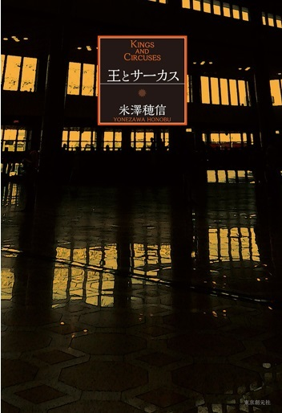
（著）米澤積信、東京創元社、2015年7月31日
米澤積信氏の『王とサーカス』を取り上げる。
著者は2014年、2015年と二年連続ミステリー部門において三冠を受賞している。
三冠とは、▽
『ミステリが読みたい！』（早川書房）▽
『週刊文春ミステリーベスト10』（文芸春秋）▽
『このミステリーがすごい！』（宝島社）の三社において受賞をしたということである。ちなみ、2014年に三冠を受賞した作品とは『満願』であった。
『王とサーカス』は、非常に読みやすく、テンポよく一気に読むことができる作品であると思う。個人的に申し上げれば、本作品は史実に基づいて書かれているために、ミステリー作品とはいえないような思いがある。
■あらすじ
物語のモチーフは、2001年6月1日に起こったネパール王族殺害事件を題材としている。未だ真実がわからないままに迷宮入りとなった事件である。
ネパールの歴史的な変遷を調べると、2001年6月1日に王族事件が起こり、2008年5月28日共和制となった経緯がある。
この歴史の大きな変化は、今日のネパールに大きな影を落としている。
さて、この物語は、ネパール取材へ行ったジャーナリストの太刀洗万智という女性が、偶然王族殺害事件と遭遇したところから展開する。そもそも主人公である太刀洗万智は、雑誌の取材記者としてネパールへ行っていた。しかし、王族殺害事件に遭遇したことから、自らが日本へ情報（真実）を発信することがいまの自分の役割ではないかと考えはじめる。
つまり、「ジャーナリストの役割」や「真実を伝えること」についての意味を真剣に考え悩み始めていく。
この物語は、ジャーナリズムの真髄から太刀洗万智が事件の真相を追求していく物語であり、一人前のジャーナリストに育っていく心の葛藤を描いている作品である。たとえば、同じようなストーリーティリングでいえば、まるでスター・ウォーズの主人公ルーク・スカイウォーカーが一人前のジェダイの騎士に成長していく過程を描いた物語と同様である。
■構図
情報の伝達者VS情報の受信者
■考察
まず始めに、ジャーナリズムとは、真実を伝えることであるが、それは第四の権力ともいわれている。しばしば使われる「ペンは剣よりも強し」という意味はメディアに力があることを意味している。この物語から理解できたことは、ジャーナリズムとは、真実を伝えることでありながら、受け手側にとっては、興味本位でしか捉えられない可能性があることを語っていることである。確かにいわれてみると、常にそういう視点で受け手側は見ている傾向が強いといえるだろう。私たちはこのような視点で捉えていることも自覚するべきである。
一方、歴史的な視点からすれば、時の権力者により、情報がコントロールされてしまう時代があった。このような時代には、権力者に対しての行動を監視するという視点が本来必要なはずであるのだが、その暗い時代には、透明性とメディアの独立性が担保されることになっていることが重要なのである。これにより初めて成り立っているわけである。これがジャーナリズムの真髄ではないだろうか、と考える。
以上のことから考えると、ジャーナリズムには両面が存在しているわけである。発信側と受け手側においての立場をみれば明確に違っている。もしかすると時代ごとに、役割が微妙に違っているのかもしれない。
たとえば、平和な時代においての真実は受け手側からみれば、興味本位が中心となっている傾向が強いのかもしれない。また、時代が不安定になると、権力者に権力が集中して情報をコントロールしていくものではないだろうか？ と考えられる。
このように過去の時代を見てみると、ジャーナリズムの役割は、微妙に形を変えている。しかし、学ぶべきことは、事件の真実に対して受け手側が何を教訓として学ぶことができるのか？ ということを最優先にして考えていくことがジャーナリズムではないかと考える。
第二点目になるが、ジャーナリストの世界と評価（存在と価値）について語ってみたい。
ジャーナリストとは、自らの取材活動に基づいて、マスメディアに報道記事をする人を呼ぶ。ジャーナリストが書いたものが評価されることの意味を考えてみたのだが、それは、おそらく高い倫理観、教養、客観的な視点から裏付けられた寄稿や論理的に真実を語ることができる内容であることが条件となるものと考える。優れたジャーナリストとは、常にあらゆる角度から物事を捉えて、分析をしている。その分析力は、物事の仕組みを理解できるだけの読書量（専門知識＋歴史＋倫理観など）が土台となっているものと考えられる。
そして、ジャーナリストが真実の情報発信をしたところで、受け手側において、その情報を評価できる人材がいるのかどうかも問題である。正しい情報の解釈ができるのか？ ということで受け手側の理解度が違ってくる。しかし、ジャーナリストは受け手側に理解しやすく書いたり、情報（真実）に対して、正しい理解がもてるように伝えたりすることも大きな役割なのであろう。それができることにより、正しい情報があり、正しい理解がなされ、正しい評価があるわけである。ジャーナリストの存在と価値が成り立つということは、この底辺が固まっていることになると考えられる。
第三点目になるが、Web社会が発展することにより、これからは個人がジャーナリストになる可能性が高くなっていく。個人がジャーナリストに近い役割になることで、社会が益々興味本位で動くことのリスクも同時に考えられる。この個人発信の情報にも、評価できる個人が存在していくことで、正しい評価ができる仕組みになることが重要になる。
そして、ジャーナリストの情報により、世の中の真実が益々明らかになることで社会の仕組みが大きく変わっていくであろう。これからのWeb社会には、プロのジャーナリストとアマチュアのジャーナリストが存在していく社会となるであろう。
【Coffee break１～ピーターキャットの店主～】
1979年、私は大学生であった。
シラケ世代と世の中からは呼ばれていた世代である。
そして、私は当時、代々木に住んでいた高校時代のT君の家にしばしば遊びへ行っていた。
ある日、彼の家にいくと、いつもは音楽の話となるのだが、その日は、話題が本の話となり、面白い本があるといわれ『風の歌を聴け』を紹介された。
そして、彼は私にこういった。「この作家のお店が千駄ヶ谷にあるので、一緒に歩いていこう」と誘われ、初めて作家のお店へ行ったのであった。
お店の名前は"ピーターキャット"。猫をイメージしたお店だ。
２階に上がると入口があり、窓側の席に座った。
店主が水を運んでくる。ぼそぼそと小さな声でT君と私にいった。
「いらっしゃいませ」しかし、その声はほとんど聞こえない。
私は、アイスコーヒーを注文した。アイスコーヒーは決して好きではないのに、いつも季節を気にせずに一年中注文していた。
そのせいで、いまでも冷たい飲み物を飲むと自律神経のバランスを崩してしまい、胃が冷たくなり痛くなる。T君はホットコーヒーを注文した。
お店の中に流れる音楽は、スタンゲッツ。
ジャズの心地よいサウンドと猫のオブジェの空間に私たちを導いてくれる不思議なお店だった。
しばらくして、アイスコーヒーとホットコーヒーが運ばれてきた。
店主は戻り、カウンターの隅で、原稿を書き始めた。
おそらく、それは『1973年のピンボール』を書いていたのかもしれない。
私は勝手にそう思っている。思い出とはそういうものだ。
1981年、店主は店を閉じた。
翌年『1973年のピンボール』が出版され、店主の羊三部作は完結した。
後に、店主が語っていた言葉を雑誌で読んだことがある。
「30万部が安定して売れるようになり、なんとかやっていける自信がもてた」
1987年『ノルウェイの森』が出版された。
店主は作家として世の中でブレイクした。
私には、このようなことが起こることを全く想像できなかった。
『ノルウェイの森』は、店主の環境を大きく変える作品になった。
この中で出てきたジャズバー"Dug"は私が18歳から通っていたオアシスだった。
このブレイクのおかげで、当時"Dug"へは私が好きなときに行けなくなってしまった。
それをいまでも覚えている。
私と店主は、私の勝手な思い出の中で繋がっていたが、『ノルウェイの森』を境にして私の心の距離は離れていった。なぜなら、私には贔屓していた店主の小説が世の中で認められることはとても嬉しかったが、あまりに突然、ものすごい人気が出てしまったことで何かを失ったような気持ちになってしまったからだ。
とはいえ、その後の店主の小説は読み続けていた。こうしていつの間にか私は、店主が出版する小説の初版本だけを集めることが趣味になった。
今日、店主は世界的な作家になり、ノーベル文学賞候補までになった。
いまでも私の心の中では"ピーターキャット"の店主のままである。大変失礼なことなのかもしれないが、できるならば、もう一度ジャズの心地よいサウンドと猫のオブジェの空間に私を導いてほしいと心から願っている。
第９章：『静かな木』
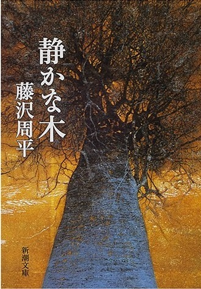
（著）藤沢周平、新潮社、1998年1月
藤沢周平氏の『静かな木』を取り上げる。
本作品は、短編である。そもそもこの著者の作品を読むのは私にとっては初めての経験であった。なぜいま読もうと思ったのかというと、私が30歳前半のとき、私は当時製薬会社の三共（株）の関連会社にいた。そのときお世話になった課長がこの作家を愛読していたことを直接伺ったことがあった。それを私は心の片隅でずっと覚えていたのである。そして、あの時代の私には決して理解できない人生の奥行きの深さをいまの私の年齢だからこそ理解できる気持ちになれた。それをとても不思議なご縁と感じたのだ。やはり、年齢によって理解できる本は存在するものである。
■あらすじ
主人公である布施孫左衛門は、5年前に藩の勘定方を退いた。2年後には還暦を迎える。いまは隠居の身だ。
釣りを愉しんだ帰り、福泉寺に欅が見えた。その木は、遠い西空から届く夕映えのかすかな赤みをとどめて静かに立っていた。
孫左衛門は、「あのような最後を迎えられればいい」とそう思った。
孫左衛門は、以前勘定方に勤めていた。そのとき、不祥事に巻き込まれて家禄を10石減らされた。
そして、5年前には連れ合いを亡くした。
このような出来事が起こると、人生には浮き沈みがあって、晩年を迎えることができればよしとするべきなのかと、孫左衛門は思うことがある。と同時に、老年の死について身近に感じることがあるが、すべてを見てきたからこそ、欅に自分を重ねて見てしまう。
釣りを愉しんだあとに帰宅すると、息子である邦之助が（格上の間瀬家へ婿に入った）果し合いをすることになったことを聴きとても驚いた。しかも、果し合いの相手は、鳥飼中老の息子勝弥である。
勝っても負けても相手が鳥飼家の総領だということで、間瀬家は、家名存続の危機にさらされることになることを心配し、それを回避するべき行動をとらねばならないと考えた。
実は、孫左衛門には20年前に勘定奉行所に務めていたとき、現在中老となった鳥飼群兵衛の不祥事に巻き込まれてしまい、家禄を10石減らされた苦い過去がある。しかも、あのときは泣きつかれ、上手くことを収めたはずだが責任を取らされる形となった。その一方で、鳥飼群兵衛は中老まで上り詰めた因縁の相手なのだ。
まさか、その鳥飼群兵衛の息子と自分の息子とが果し合いになるとは......。孫左衛門は、この信じられないことをどうしても避けたかった。
早速、孫左衛門は行動を起こした。まずは勘定方に出仕している5歳年下の寺井権吉に会うことだった。寺井からは当時の帳簿の写しを丁寧に見せてもらった。文書の最後には、和泉屋から鳥飼に渡った賄賂の額も年毎に記載してあった。
これは隠しようがない証拠であった。
次に孫左衛門は、和泉屋を調べたときの書類を奉行所の書庫内で探す必要があった。そこで、もとの町奉行尾形弥太夫のところへ行った。そして、尾形の添状をもらって町奉行所を訪ねた。
町奉行所山岸藤助は、和泉屋の書類を探しに行ったところ、尾形が調べた和泉屋の一件書類が、そっくり掻き消えていたことを知った。
その後、孫左衛門は中老となった鳥飼群兵衛へ面会を申し入れた。
内容は、果し合いの中止を申し入れるために、当時の不祥事の事実と取引をするために交渉をしたのだ。
孫左衛門は鳥飼群兵衛を窮地に追い込むことができた。
しかし、鳥飼群兵衛から最後に一言、「軽挙妄動するなよ」といわれた。
この面会のあとに、孫左衛門は命を狙われてしまう。
寺井権吉も同じであったが、寺井は一刀で鳥飼群兵衛を倒した。鳥飼は逃げた。そして、このような事件が起きたにもかかわらず、事態は何事も進展はしなかった。
あいまいな形の終わり方であったように思えた。
しばらくして迎えた正月、藩の政権が変わり、まだ寒い二月に、元中老鳥飼群兵衛の収賄に関わる疑獄が摘発された。
疑獄の摘発は、もとの町奉行尾形弥太夫が和泉屋の一件書類が紛失したという山岸のひそかな報告を不審として、その解明を横山中老に直訴したのが発端だった。
その結果、息子と勝弥との果し合いは無くなり孫左衛門は10石、寺井権吉は5石の禄が戻ってきた。
■構図
善VS悪
■考察
まず始めに、コンプライアンスの問題の視点から語りたい。
時代的にはコンプライアンスの考え方がなかったわけであり、逆に「コンプライアンス」の大切さを語っていることが理解できる。
なぜなら物語では、孫左衛門は、あと２年で還暦を迎える年齢となり、自らを欅の木にたとえて人生の終わりを考えていた。「あのような最後を迎えられればいい」と隠居生活をしていたのだ。そのときに息子が事件に巻き込まれてしまい、親馬鹿である孫左衛門は迅速な行動をとった。その結果、本作品の中において出てくる事件は、孫左衛門でなかったが、もとの町奉行尾形弥太夫によって解決されることになったわけであるが、コンプライアンスの視点から切り込むと、この時代のルールというものは必ずしも現代のような六法全書がすべてではなかった時代であり、逆にこの時代の倫理観とは何なのか？ ということを読者諸兄ならば、興味をもつのは当然であろう。
江戸時代の倫理とはどのような仕組みから成り立っているのか、強く興味をもってしまった。現代をみれば、法律の下にコンプライアンスがある。どちらかというならば、業界の規範の下に企業のコンプライアンスが存在している形をとっている。
私の個人的な主観で申し上げれば、私が新人だった約36年前の常識と現代は時代が大きく違い、当時はコンプライアンスという欧米の考え方が入っていなかった。それは日本独特の文化の常識の中で社会が成り立っていたわけである。いまだからこそ、昔を思うと、時代がのんびりとしていたということでもあり、今日のようにあまりにも厳しい時代でもなく、閉塞感を感じなかったと思える。
第二点目になるが、先のところにも書いたが、どの時代に生きた人間も同じ悩みを抱えているということである。確か昭和50年代だったと思うが、野坂昭如のCMに「ソクラテス、プラトンは、みんな悩んで大きくなった」というCMを皆さんは覚えていらっしゃるだろうか？
これは、とても普遍的な言葉であると考えられる。それは、現代に生きている人間だろうが、過去に生きた人間だろうが、文明の発達について、たとえ大きな違いを背景にもつというが、人間の大きな悩みは普遍的に変わらないということだ。
たとえば、本作品の中では、孫左衛門は58歳であるが、この歳になっても、子供のことの心配はつきないと語っている。また、子供である邦之助は、父親である孫左衛門に大きな意味で甘えている。視点を変えてみれば、親子の愛情の物語ともいえるし、また、人間の大きな悩みは基本的には人間関係から発生していることが理解できる。親馬鹿はどの時代にも存在していることを理解できる。過去の古書（小説を含む）を読むと人間の悩みの普遍性を痛感することができる。たとえば、古代ローマ時代に生きた人間やシェークスピアの世界に生きた人間の名言を取ってみても、同じ悩みを繰り返しているからこそ現代人にも共感できる。「生きるべきか、死ぬべきかそれが問題だ」「ブルータスお前えもか？」など、人間の悩みはどの時代においても永遠に生き続けるわけである。
第三点目になるが、話は大きく変わり、江戸時代には老後の楽しみがあったのか？ ということを調べてみた。そもそも江戸時代の人間の寿命は何歳だったのか？ ということをネットで調べてみたところ、江戸時代は30歳～40歳だろうと記載されていた。
本作品の中では、孫左衛門は58歳であり、かなり長生きをしているものと考えられた。
そこで、孫左衛門の老後の楽しみを確認してみた。それは「釣り」であった。
続いて、江戸時代における老後の楽しみには何があったのか調べてみた。
芝居観覧、読書、浮世絵鑑賞などを老若男女が愉しんでいたようだ。
また、若い男性だけの楽しみとは、湯屋の後の囲碁・将棋、習い事（剣術、声色、所作指南、秀句指南）同好会（俳句、川柳、百物語）、生き物（犬、猫、小鳥、虫、植物）などであったそうだ。
農村での楽しみは、鎮守様の春秋2回のお祭りであり、これに併せて操り人形の芝居、もしくは自分たちで芝居、相撲をとり、愉しんでいたとのことだ。
正月・盆・節句などの行事には餅をつき、酒を飲み一緒に踊ったりしていた。
このように、現代に生きる私たちの老後の楽しみ方も、夢中になれる趣味をもつことが重要であることを理解できる。私がいつも考えることは、一人で遊べる趣味、世代を超えて遊べる趣味の二つをもつことが重要だと考える。前述したが、健康寿命は、男性が71歳、女性が74歳であるので、五体満足に体が動ける残りの時間に対して、何をしたいのか優先順位をつけた上で残りの大切な時間を考えることが重要だと考える。
第１０章：『天災から日本史を読み直す～先人に学ぶ防災～』
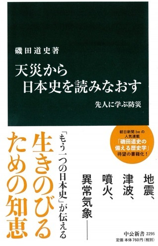
(著)磯田道史、中央公論新社、2014年11月25日
『天災から日本史を読み直す～先人に学ぶ防災～』を取り上げる。
著者は磯田道史氏である。本作品の「まえがき」には興味あることが書かれてある。
「すべての真の歴史は現代史である」という言葉である。
これは、世界的に有名なイタリアの歴史哲学者ベネットクローチェの言葉だ。
この意味だが、すべての歴史は人間の認識の中にあるために、価値観が違うと歴史も変わって見えるということと私は理解している。
なぜ今回、ベネットクローチェの言葉を取り上げたのかというならば、彼の人生は、天災に遭遇たことが転機となって歴史哲学者になったからだ。
大きな天災は、悲劇を生む。そして、残された人間の人生を大きく変えてしまうことが現実である。しかしながら、彼は、それを乗り越えて生きていった。
本作品では、天災に遭遇することが最初からその人の運命に組み込まれており、それによって人生や運が開けていくという意外な真実に、「人の運命とはいかなるものか？」、そして、「人生で起こることにはすべて意味があるのでは？」、ということを考えさせられる内容である。
■あらすじ
本作品は天災（地震）からの視点で秀吉の運命を見たものであるが、ここで取り上げるのは、秀吉の時代に地震がその権力基盤にどのように影響を与えたのか？ について書いてある。
秀吉の運命を大きく変えた地震は大きな意味で運命ということが理解できる。
Ⅰ ）天正地震～家康は天正地震により天下が取れた～
天正地震は、1586年1月29日に発生した。
もしこの地震が起きなければ、2ヵ月後には家康は秀吉の大軍による総攻撃を受けるはずだった。
☆
戦況はこうだ。
・天正13年(1585年）
11月13日 家康の片腕である石川和正の裏切り
11月18日 秀吉は最前基地の大垣城に兵量蔵を建てた（5000俵ほど）
11月19日 秀吉は家康追討を公言。進発期日は正月15日
☆
秀吉と家康の地震前後の動静について
秀吉：ヨーロッパ宣教師フロイスの記述より
関白は、かつて明智光秀のものであった近江の湖のほとり坂本の城にいたが、秀吉は、そのときに手かけていたものをすべて放棄して、馬を乗り継ぎ、大坂へ避難した。
家康：戦いの準備に追われ、眠りについたところを地震に襲われた。
☆
秀吉と家康の地震による被害は？
秀吉：家康追討の前線基地となる、兵量米を入れてあった大垣城はことごとく覆り、その上、出火、城中一家も残らず焼けた。
先鋒が期待されていた山内一豊の長浜城も倒壊、圧死者多数、城下は火の海。
つまり、近江、伊勢、美濃、尾張は戦ができる状況ではなくなった。
秀吉は一夜にして前線基地を失った。
家康：ほとんど被害を受けなかった。
☆
天正地震の結果
この状況下にて秀吉は、本来ならば攻めて家康を滅ぼすことができた。
しかし、天正地震が起こったことで、戦略を大きく変更させた。
つまり、家康を上洛させることで天下泰平を考えることに至ったわけだ。
もしも秀吉が家康と戦っていたならば確実に家康は滅亡していただろうと考えられる。
その後の歴史は、どのようになっていったのか想像するだけでも興味があるのだが、事実は地震が起こったことで家康を存在させ、生かした結果になっている。
Ⅱ ）伏見地震について～豊臣政権を崩壊へ導く引き金～
伏見地震とは、1596年に発生したものだ。
この伏見地震とは豊臣政権を崩壊へ導く引き金となった地震である。
☆
伏見地震発生前の時代背景
伏見地震が起こる以前には、すでに大名は朝鮮出兵で疲れており、不審を募らせていた。このことにより、秀吉と三成は、このままでは甥の関白秀次へ政治の求心力が移ることを危惧していた。
秀吉と三成は先手を打った。
この先手とは、秀次と妻子側近を処刑することだった。
この一件で、さらに多くの大名たちが秀吉に対する不安と不審、恨みを募らせることになった。
☆
伏見地震発生後の時代背景
伏見地震が起きた後に、秀吉はとんでもない命令を出した。
「地震で崩れた伏見城をもっと豪華に再建せよ、同時に朝鮮に再度攻め入れ」と命じたのだった。
☆
伏見地震の結果
この伏見地震に対する対応にて政治の節目が大きく変わった。
家康の側近米沖清右衛門の妻は、夢の中で以下のような和歌を歌った。
「盛りなる都の花はちり果てて、東の松ぞ世をば継ぎける」
京都の豊臣政権が花と散り、関東の徳川が天下を継ぐという意味である。
このように秀吉から人心が離れるにつれ、徳川家の家中に、天下が奪える、秀吉は倒せる、という「やる気」が生じたそうだ。
■構図
大きな天災（悲劇）VS運命を乗り越える人間
■考察
まず始めに、天災（地震）は人間の運命を翻弄させている。
たとえば、歴史を振りかえると、必ず大きな転換期には天災が起こっていた。
天災が起こると時の政権が大きく影響を受けていた事実があった。つまり、天災が起こるたびに、時の政権の対応により大きく世論が動いていたようだ。現代をみても、東日本大震災時には、政権与党の対応に大きく不満を感じた世論は、その後政権交代へと導いていた事実があった。歴史は繰り返しているのである。
第二点目になるが、古文書から読み解くことは重要なことであり過去の時代と現代を繋ぐメッセージを理解することはとても重要である。
ここから学べることは、読み解くことをしっかりとしておけば、過去の「天災から防御ができる」可能性が高くなるということである。人間は学びと将来のリスクに備えることが重要である。
第三点目になるが、権力者は権力を守ろうという立場が強くなるほど、常に指示命令することに対して正当性があると考えている傾向が強いことである。
しかし、現実をみれば、現場に沿った最善のことではない指示が出ていることが多々ある。
つまり、権力者が正しいと考えたことでも間違っていることがあることを理解するべきである。もしも権力者に柔軟性があれば、事態を状況分析できるであろう。そして、反対派の意見を取り込み、事態を円満に解決することができれば、両者の顔を立てた丸く収めた対応が可能となるであろう。しかし、これを具現化するためには、どちらの案を最初に実行するのかということである。以上のようなことから、権力者は、権威を重要視するより、事態をいかに早く解決することを優先させることが重要なことではないだろうか？
第１１章：『官賊と幕臣たち～列強の日本侵略を防いだ徳川テクノクラート～』
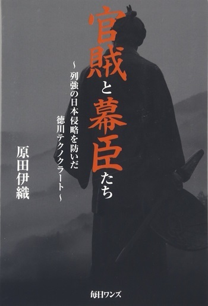
（著）原田伊織、毎日ワンズ、2016年2月
原田伊織氏の『官賊と幕臣たち～列強の日本侵略を防いだ徳川テクノクラート～』を取り上げる。著者は『明治維新という過ち 改訂増補版』をすでに出版している。
私も2冊読破したが特に『官賊と幕臣たち』は、とても面白い内容だと思った。
本作品を読んで痛感することは、やはり歴史は常に勝者の都合のよいように記録されていることを歴史の真実といえるのかということである。この視点から日本史を見てしまうと、古事記から始まる著名な古書も、時の権力者たちが作りあげた話だけを一方的に読まされていることを痛感する。そこで、今回取り上げたのは、この勝者の視点からではなく敗者の視点からの「明治維新」である。本作品を読み終えると、きっとこれまで私たちが教育を受けてきた明治維新後の事実と史実との違いを理解できると思う。辿り着くところは、真実はどこにあるのか？ ということになるが、それは読者諸兄の判断に依存するべきことになる。以下、特に私が興味を引いたところだけを取り上げてみた。
まず始めに、「幕末の思想を作ったのは水戸藩」である。
すでにご存知だと思うが、「尊皇攘夷」という思想は、水戸藩が始まりである。
そして、その思想を実行したのが長州藩であった。
つまり、水戸藩は御三家でありながら、倒幕の原動力となってしまった。
本来ならば、幕府を守る御三家のひとつが、倒幕の原動力となること自体、理解できないことであるが、水戸藩が、がん細胞と同じような立場と置き換えれば、すんなりと理解できそうな気がする。要するにすでに御三家という自己免疫システムが壊れた状態であったわけで、水戸藩が、がん細胞であることを認識できなかったということである。
次に、特に驚いたことの一つには、「尊皇攘夷」という思想を明治維新という形で具現化した薩長には全く次に来る新しい時代の青写真をもっていなかったということである。しかも、その青写真とは、江戸幕府の幕臣たちがもっていたと書かれていることを読むと、明治維新を成し遂げた意味とは何なのだろうと考えてしまった。
また、明治政府が実行したことのほとんどは幕臣であった小栗上野介忠順が計画していたといわれている。明治政府の6割～7割は、旧幕臣官僚、藩史だった。さすがにこれには強い衝撃を受けてしまった。
第二点目になるが、「水戸学というものについて」考えてみると、「水戸学というものは、現代でいうならば、自分たちの理想を実現するためにはテロ（暗殺）までも実行する」という思想になるとのこと。
著者は、この思想こそ太平洋戦争（大東亜戦争）まで繋がっていると述べている。
つまり、明治維新後に長州が創設した大日本帝国陸軍には、この遺伝子が存在していたというわけだ。具体的にいうならば、5.15事件、2.25事件、太平洋戦争（大東亜戦争）への流れを作り、開戦を踏みきってしまったのは、大日本帝国陸軍が中心となって自らの理想を実現するために暴走したと見ている。
第三点目になるが、「幕府の瓦解について」語ってみたい。
幕府の瓦解の原因は複合的であるが、結果として、米国初代大使ハリス、英国大使オールコックによるものが大きかった。
1ドル＝1分とペリーは受け入れたが、米英外交団は1ドル＝3分を主張したことにより、コバング（小判）は大量に流出した事実があった。この問題を解決するために、小栗は米国へ行ったのである。詳細は六点目のところに書いたのでご一読願いたい。
第四点目になるが、「薩長同盟は存在しなかった」ことである。
同盟という言葉の記録は残っていない。
ここでいいたいことは、薩長を結びつけた黒幕として英国グラバー商会の存在がある。つまり、英国も日本侵略のきっかけを深謀遠慮で考えていたということである。そして薩摩は、幕府を騙して貿易をして資金を貯めており武器弾薬などを購入していた。
また、薩摩が間に入ることで、長州とも手を結び武器弾薬を提供した。
このような形で薩摩長州による倒幕に至った構図の背景にあるのは、英国だったというわけである。ちなみに、坂本龍馬の存在は、司馬遼太郎の小説の世界とは違い、グラバー商会の手先だけだったという解釈であることには驚いてしまった。
いかにも龍馬が三角取引（薩摩、長州、グラバー商会）を提案して薩長同盟という形にしたことを小説の世界では描いてあったが、実は逆であり、グラバー商会の考えに基づいて手先となり動いただけだったということが書かれているのだ。
もしこれが真実だとするならば、司馬遼太郎の『竜馬がゆく』を読んだ人たちにとってはとても寂しい気がする。実は私もそのひとりである。なぜなら、小説の世界では、躍動感ある生き方をしていた坂本竜馬が好きだったからだ。常に前向きに生きていく姿勢は、竜馬から学んだからだ。
第五点目になるが、「徳川幕臣は、幕府が衰退する中でも、外交力」を身につけていたこと。
幕府の外交力は、スペイン、ポルトガル、ロシア、米国、英国、オランダなどの国々とのやり取りの中でかなりの経験を積んでいった。
幕臣たちは、幕府の衰退を感じつつも日本の将来を考えて行動をしたという役割に準じたことは素晴しいと思える。これは日本人がもつ自己犠牲の精神のひとつではないかと考えている。
第六点目になるが、(※1)「小栗上野介忠順について」語るが、この幕末において、私が個人的に好きな幕臣といえば、小栗上野介忠順がいる。もしこの人物が明治維新後にも生かされていたならば、きっと日本の近代史を大きく変えていたものと推測できる。なぜなら、小栗は米艦ポーハタン号で渡米し、日本人で初めて地球を一周して帰国しており、通貨戦争にて米国側を論破し、さらには、薩摩長州が上京する際には、将軍を攻撃する際の作戦を提案していたからだ。ちなみに、後にこの提案（作戦）が存在したことを知った薩摩長州は、この計画を立案した小栗の頭の切れをとても恐れたそうだ。つまりは、新政府を転覆できるほどの人物と恐れられたそうである。このため、明治政府は小栗を生かすことなく斬首してしまった。
こうして、小栗家は不名誉な取り扱いをされたわけであるが、日露戦争に日本が勝利した際、この勝利の理由として、幕臣時代に小栗が作った横須賀が軍港であったとのことを東郷平八郎が述べた。この経緯を簡単に説明する。1853年、ペリー率いる黒船艦隊が横須賀の浦賀に来港した当時幕府は鎖国的な国策を進めていた。しかし、当時の勘定奉行であった小栗は、「島国である日本が、諸外国と渡り合うためには、近代海軍の整備が急務だ」と考え、1865年、幕府を説得した小栗は、フランス海軍技師のヴェルニーを招き横須賀に、日本で初めての造船所となる「横須賀製鉄所」の建造を始めた。後にここは日本海軍の重要拠点軍港となり日露戦争当時には日本海軍軍艦の整備などを行う軍港となった経緯がある。1912（明治45）年7月、東郷平八郎は自宅に小栗貞雄（小栗上野介忠順の娘国子と結婚し婿養子）と息子の又一を招き、「日本海海戦に勝利できたのは製鉄所、造船所を建設した小栗氏のお陰であることが大きい」と礼を述べた後、仁義禮智信としたためた書を又一に贈ったという事実がある。
このように、小栗上野介忠順の能力と先見力に関しては、司馬遼太郎は明治の父と述べている。
余談になるが、幕末とは全く関係がない話題となってしまうが、戦国時代には人身売買があった。それは、マニラ、マカオ、シンガポール、シャムへ少なくとも数十万を超える日本人が主にポルトガルの黒船で売り飛ばされていた。初期においては、イエスズ会も加担していたことが判明していると記載されている。また、資料のひとつとして、ルイスフロイスの「奴隷売買」にも記録されている。ちなみ、このようなことから、1587（天正15)年、秀吉は「伴天連追放令」を発令、その第十条で人身売買停止令を発動している。
■構図
新しい時代VS過去の時代
幕府VS薩摩長州
歴史は勝者が作るVS歴史の真実は敗者が知っている
■考察
明治維新後から150年（平成30年）を迎えるが、しっかりと検証をするべきだということだ。
この背景にあるのは、いま江戸時代が注目されているからである。たとえば、なぜ260年間も平和を継続することができたのか？ 世界の歴史では考えられないことだからである。また、江戸時代における幕府の統治方法など、江戸幕府の取り組み方が現代日本の基盤であると見直されている時代となっている。さらに優れていることは、当時の列強諸国からの圧力に屈せずに、幕府の外交力は先見性の高い対応をしていたことである。したがって、明治政府が樹立されたことにより、必ずしも日本が植民地にならずに独立国家になったことの正当性は考えられないというわけだ。特に太平洋戦争（大東亜戦争）における敗戦は明治維新が起こらなかったならば戦争自体が行われなかったという強い考え方を著者はもっている。この理由としては、薩長には、明治政府樹立後の青写真をもっていなかったからであり、太平洋戦争（大東亜戦争）の始まりは、関東軍の暴走だった。その行動自体は、幕末の長州そのものの遺伝子だといっている。これはある意味歴史の事実ともいえる。しかし、すべて著者のいうことが正しいわけでなく、やはり現実を直視して物事を見なければならないと思う。その後敗戦を経験したからこそ、いまの日本がある。たとえ著者がいうような歴史的な正当性が立証されたとしても、戦争行為を行って敗戦したことの事実は変えることができない。
つまり過去に対する評価というものより、現実の視点から明るい未来へ向かっていくことに比重を置くことで日本がよりよくなることに最善を尽くした方がよいのではないかと考える。
第１２章：『血の轍』
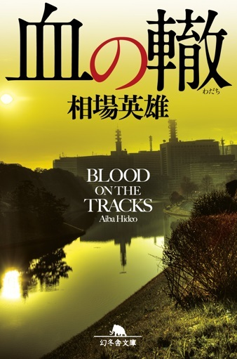
（著）相場英雄、幻冬舎、2013年1月25日
本作品は推理小説（警察）である。推理小説だけあって、プロローグにはこの物語を盛り上げていくための伏線が沢山仕掛けられている。
その伏線を読み取りながら、先へ進んで頂き、奇想天外な結末をぜひ堪能して頂きたいと思う。特に、本作品の中の言葉として印象に残ったのは、「公安と刑事の轍
が交わることはない」という言葉だった。この言葉は、物語のすべてを語っているものだ。
真実を隠蔽しようとする公安部と真実を解明しようとする刑事部との攻防と同時に日本社会の欠点でもあるセクショナリズムを十分に感じることができる作品だ。
■あらすじ
新宿署時代に盟友だった公安部志水達也、刑事部兎沢実。
志水は、刑事としての教育を兎沢に教えてもらった間柄だ。
ある日、都立戸山公園に元刑事香川の遺体が発見される。
この殺人事件を解決するために捜査をしていくと、香川が残したメモリーカードには、国家を揺るがすほどの情報が入っていることがわかった。
■構図
警視庁刑事VS警視庁公安
■考察
まず始めに、セクショナリズムについて考えてみたいと思う。
セクショナリズムとは、部署間の対立と排他的なことを示すものである。
この問題が極端になると、組織の硬直化が起こり、動脈硬化と同じで柔軟性がなくなり、血管の破裂を待つだけの状態となる。しかし、現実の人間社会では政治的闘争が多々起こりうる。とはいえ、どう考えても組織間の協力は必要であって全社あげて一枚岩になることの重要性を理解する必要はあろう。なぜなら、成果とは会社全体で作り上げるものだからである。また、部門ごとに自己完結型ならばよいのだが、会社全体としての成果を求められるものであるならば、セクショナリズムがあっては成果を出せない環境となってしまうからだ。たとえば、会社全体は、部門ごとの自己完結型であると考えてみると、その部門の営業が新規案件を取ってこなければ、実務担当者の仕事はなく部門の業績、つまりは会社の業績は悪くなる。しかし、営業が頑張り市場を啓蒙していくことで新規案件の受託数が増加していくならば、実務担当者は仕事に追われストレスを抱えていくことになる。と同時に品質管理が重要となっていくわけである。つまり、会社の中で部門ごとの部門長は受注量と受託体制のバランスを考える必要があり、さらには、次に目指す新しいステージはどのような体制にするべきか、その青写真を考えられる能力が必要となる。特に次の青写真を描くためには、業界に通じていなければならず、業務の内容を理解できる人材が重要な役割となろう。
第二点目になるが、常に組織の判断は正しいのだろうか？ これについて考えてみた。
第二次世界大戦におけるナチスドイツは、ヒットラーを国民が投票で選んだ結果、政党が戦争を始めたわけであり、結果的には政党を選んだ国民に責任があるといわれている。
一方、当時の日本では国民が選挙で選ぶシステムはなく、一部の人間だけが選挙権をもっていた。いずれにしろ、戦争に突入したのは、民意の存在の有無を除いたとしても、国家間による民主主義の浸透度の違い、つまりは国体の構造から違っていた背景が存在している。
ちなみに、ここから考えたいことは、組織の判断は常に正しいのか？ ということである。基本的に国家や会社上層部が決定したことは正しいことばかりではないであろう、と私は思っている。この根拠となることは、歴史の結果から見ると、国家滅亡、会社倒産などの事例が多々あるからだ。
次に、ここで注目をしたいことは、国家滅亡、会社倒産の中で組織の中核として動いていた中間管理職が、上層部の指示を受けて実際にオペレーションをしていたはずであるが、彼らはどのような心理状態で動いていたのか実際に考える必要があると思う。
たとえば、参考になるかどうかわからないが、マックス・ウェバーは、「職業としての政治」の中で次のことを述べている。(※1)「官僚は専門家であり、かつ、非党派的であるべきである。政治的闘争に巻き込まれてはならない。党派性や闘争は政治家の本領であり、官僚とは全く異なる責任があるのだ。官僚とは、もしも上部の命令が自分の意見とは相容れないものであったとしても、それが信念であるかのように執行するべきである」
ここでは官僚という言葉を、部長、課長に置き換えて理解してもらいたい。つまり、中間管理職は、上部の命令が部下や自分個人の意見とは相容れないものであったとしてもそれを実行しなければならず、その点で難しい立場だということがよく理解できる。サラリーマンとして中間管理職を経験した人ならば、この板ばさみをよく理解できるであろう。とにかく、もし対立した組織間の中で立ち回るときには、中立的な立場で、正しく会社の利益を考えた指示でなければ動かないという意志をもつことが大原則であると考える。また、組織というものは置かれた立場によって、人間を変えてしまう力があるこということも忘れてはいけないと思う。
第三点目になるが、徳川幕府末期における長期的な判断について考えてみたいと思う。
前回も申し上げたが、小栗上野介忠順の名言がある。この言葉は適格に組織の利益は中長期な視点から考えるべきということを捉えている。「幕府の運命に限りがあるとも、日本の運命には限りがない」この名言は、幕臣・鈴木重嶺（佐渡奉行）の「費用をかけて造船所を造っても成功する時分に、幕府はどうなっているかわからない」という言葉に答えたものである。
つまり、幕府が滅びていくことより、日本の将来から考えた発言であったわけだ。この言葉の重みを改めて感じてしまう。
第四点目になるが、セクショナリズムは組織の中の部門間対立のことを示していることは、すでに申し上げた。そこで、もっと俯瞰的な視点から組織全体について考えてみた。
たとえば、私たち日本人は、幼い頃から組織というものに属して生きてきているために、もし自分が組織に属していない場合、社会的に不安定になり、社会的な信用を失うことをとても恐れている。このことにより、孤立していると考える傾向が強くなる。
一方、組織に所属することにより、確かに安心を得ることはできるが、組織の中で与えられた役割により、個人の人間性を大きく変えてしまう場合がある。そこにおかれたときには、個人の人間性などを無視するようなことを会社の業務命令としてせざるを得なくなる。このときに考えられることは、いくら組織の業務命令としても、無意味に人に対して無感情にひどいことをすれば、必ず自分に跳ね返ってくることを忘れてはいけないと思う。
これは因果応報ともいえる。たとえば、会社ごとにリストラを実施する場合は、人事部が主体となる。これを仕事として遂行をしなければいけない人たちは、ただ業務として遂行しているだけであるが、いずれこの業務に携わった人たちは、その後退職に追い込まれる傾向が強い。これはある意味因果応報であろう。いくら仕事といっても、人間として非道徳的な行為を遂行したことによる罪悪感からそれを遂行した人間にもその罪を償う場面が訪れていくことは不思議なことである。もしくは自主退職をしていく。
つまり、人間は組織の中で、個人的に罪悪感に苛まれる業務を遂行するときには、精神的に追い込まれていくものなのであろう。このような状況に置かれたときには、たとえばプライベートのときでもよいが他人によい事を行うことが、人生の歯車を前向きに噛み合せていくことに繋がる手段になるのかもしれない。つまり、よい事を行うことで心のバランスを保っていけると考えられる。
最後に上記の事例はリストラであったが、その他にも何か考えられることはあるのか、と考えてみた。おそらく、サービス業に勤務している社員は特に無意識で、クライアントへの文句を社内にて声を出していってしまうケースがある。心配なことは、そのような気持ちをもち続けることが、いつかクライアントの前で態度に出ることではないだろうか、ということである。簡単にいえば、文句をいい続ければ、不満が成長し続けいくものであろう。それはきっと態度や目線、話し方にでるということに繋がっていくのである。
そのような気持ちをもち続けながら、業務を遂行している方が、もしも、いらっしゃるならば、早く心のバランスを上手く取って頂くことを願うばかりである。
第１３章：『いとしの乗入れ列車-気まぐれ鉄道日記2-』
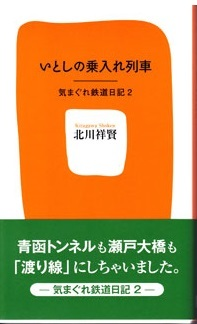
（著）北川祥賢、双峰社、2012年
私の知人の北川祥賢氏が執筆した『いとしの乗入れ列車-気まぐれ鉄道日記2-』は、『乗入れ列車を追いかけて』（双峰社、2010年）の続編にあたる。
著者は鉄道マニアである。通常ならば、「乗りテツ」と呼ばれるのであるが、自称「乗りテツ車窓派」と呼んでいる。聴くところによると、すでに2001年には日本全国のすべての鉄道（私鉄、地下鉄含む）を乗車しており、現在は2回目に挑戦中だそうだ。
このように、夢中になれる趣味をもつことは人生を２倍愉しめるものである。
また、著者のその他の趣味は、能を踊り、灯台を巡ることであると伺った。
それぞれ違った世界の人たちとの交流をもたれることが人生の時間を思う存分愉しく生きていることになっているようだ。私は読者諸兄にもそのように趣味を愉しまれる方が多くいらっしゃることだと推測している。そして、趣味を極める過程の中でより人生を愉しまれることを心より願うばかりである。
ちなみに、本作品にご興味をお持ちになられた方は、神保町にある書泉グランデだけに置かれていることをお伝えしたい。
■あらすじ
本作品は随筆のように書かれており、以下の大項目に分類できた。
Ⅰ
）乗り入れ線名、乗車日時など
Ⅱ
）乗車した乗り入れ線の特徴的な駅に関するホーム形態（４種類に分類される）
Ⅲ
）車輌の種類
Ⅳ
）食べたもの（主にランチ）について
Ⅴ
）乗車して思ったこと、感じたことのコメント
Ⅵ
）ときどき、地域ごとの歴史的な建造物、または温泉などについて
★
Ⅱ
）に関する詳細な説明：
Ⅱ
）乗車した乗り入れ線の特徴的な駅に関するホーム形態である。
ホーム形態は、４種類に分類される。
a.片ホーム：
単線区間でよく見られる一本の線路の左右にホームがある。
（e.g.:JR山手線渋谷駅、西武新宿線高田馬場駅など）
b.相対式ホーム：
片ホームが向かい合い、その間に通常の上り下りの線路がはさまる。
c.島式ホーム：
二本の線路がホームの両側にある。
（e.g.:JR山手線原宿駅など）
d.頭端式（とうたんしき）ホーム：
終着駅によく見られる島式や相対式のホーム間を先端で行き来できるようになっているホームである。又、通常、頭端式ホームで相対と島式が組み合わされる。
（e.g.:JR東京駅、大阪駅など）
■面白い所：
Ⅰ
）JRと私鉄では駅が近くても駅名が違っていること。
Ⅱ
）JRと私鉄では駅名が同じでもJRは「ノ」を入れること。
（e.g.:JR「三ノ宮駅」、私鉄「三宮」など）
Ⅲ
）乗り入れ列車は、渡り線を走る。（本作品のテーマとなる）
■考察
まず始めに、鉄道マニアの「乗りテツ車窓派」の世界観を理解できたことは、とても新鮮だった。私にとり初めて知る世界であったからだ。と同時に鉄道の楽しみ方を知ることができたことは新鮮で面白かった。
第二点目になるが、趣味に夢中になることは、コスト＆ 時間をかける（出版を含む）ことであるが、本にすることで、ご自身がこの世に存在したことの証と趣味を極めることの楽しい時間を過ごせることになる。
第三点目になるが、著者の鉄道に対する愛情とお人柄の素晴らしさを筆致から理解できたことは本当によかった。著者は私の身近にいらっしゃる方であり、違うさまざまな趣味をもたれている。たとえば、世界の灯台を回るグループや能楽鑑賞を楽しむグループにも所属している。つまり、違うコミュニティに複数所属されていることは、老後の楽しみを増やしていることには違いないと考えられる。私は著者に心から感謝している。なぜなら、歳を重ねるということは、限られた残りの人生の中で、いかに楽しい時間を過ごすかが大切であることを教えていただいているからだ。
第１４章：『タックスヘイヴン』
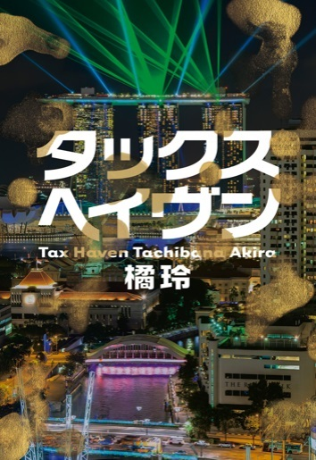
（著）橘玲、幻冬舎、2014年4月10日
本作品は、タイトルから申し上げて「租税回避地」の物語かと思いきや、そうではなく、主人公である古波蔵祐が殺人事件を解決していく物語であった。
また、本作品は、ある特定のカテゴリーへ振り分けることは難しい。
なぜなら、あらゆる要素を含んでいるからだ。
たとえば、ハードボイルド小説、推理小説、金融小説、インテリジェンス小説、恋愛小説なども含まれている。それだけ著者の見識が広いということなのだろう。
個人的に申し上げれば、特に私が強いインパクトを得た箇所をいうならば、金融（税制度を含む）に絡んだルールだった。
したがって、せっかく得た知識を早速使いたいと考えたわけなのだが、それは残念ながら、個人資産を沢山もっている人でなければ、その知識は実際には役に立たないことがわかってしまった。
兎に角、金融（税制度を含む）のルールのことを知ることが初めてならば、本作品を面白く読めると考えられる。
■あらすじ
シンガポールで、日本人のファンドマネージャー北川が転落死をした。
これは自殺・事故・他殺なのか？ 物語はここから始まる。北川という男はリーマンショック後、黒い金を集めてファンドを作り、マネーロンダリングをしながら、利益を得ていた。
しかし、ある時期から儲からなくなっていき、大きな損失を起こした。この結果、黒い投資家たちへ配当ができなくなる。このような事態から、このファンドの仕組みを作った人間が次々に殺されていくという物語であり、古波蔵祐という男が、命をかけて事件を解決していく。舞台は、シンガポール、日本、マレーシア、ミャンマー、スイス、北朝鮮である。そして、主な登場人物は、シンガポールの美人警察官アイリス、東京地検特捜部榊原、亡くなった北川の妻となった紫帆（古波蔵、牧島とも同級生）、高校時代の同級生である牧島、仕手グループ「トカゲ」、民平オーナー「村井」、政治家大神、ヤクザ組織の赤目が入れ替わり出てくる。
■構図
古波蔵祐は、誰かと対峙していき、事件を解決していく。
■面白い所
Ⅰ
）シンガポールの人気観光地がわかること。
①
シンガポール動物園（ナイトサファリ）
②
レベル63
③
クラブストリートのシチリア料理屋
④
オーチャードホテルのホアティン
Ⅱ
）歴史的な変遷を知ることができる。
タイ・ミャンマー・ラオスのメコン川一帯のゴールデントライアングル
歴史：1949年中国国民党が台湾に落ち延びたが一部は、雲南から下がってきた。
ミヤンマーとの国境を越えてメコン川流域の山岳地帯（タイ・ミャンマー国境地帯）に拠点を構えた。
この一帯は、カレン族、シャン族、ワ族、キン族などの少数民族が分散していた。
ここに当時ケシの栽培がなされていた。
国民党の残兵は、麻薬商人の護衛となり、一帯を支配した。
ベトナム戦争をピークに1987年国民党は武装解除しタイ政府統治下に。
いまでは、国民党絡みの子孫はタイに100万人いるといわれている。
Ⅲ
）税制度を知ることができる。
①
資産を多く所有している人はすでに本作品を読まなくても必要性から実施しているかもしれないが、本作品を読めば税制度の変遷や現代の規則を理解できる。しかしながら、何度も申し上げるが資産を多く所有していなければ役に立たない知識である。
②
スイス銀行が税の透明化を図った分、タックスヘイヴンの重要性は増したとのこと。
③
日本国は属地主義なので、原則として日本国内に居住していなければ日本に税金を納める必要はない。2004年租税特別措置法改正で、贈与者・受贈者がともに5年以上海外に移住していなければ課税対象となるとのこと。贈与税を逃れるためには子供とともに長期間の日本の非居住者にならなければならない。
④
日本の税制では、贈与を受けた側が税金を支払う。一方米国の税法では贈与した方が支払う。
■考察
まず始めに、「生き延びるためにはゲームを支配し相手より先にいくしかない」ということが強く印象に残った。確かにいわれてみれば、ゲームを支配するためには、相手の情報を早く入手することで、先に動いていかなければならないことを痛感する。これは何度も書いたことだが、情報をいかに早く入手して分析できるのかということがすべてだということだ。ゲームを支配するということは、たえず有利な立場でコントロールするということである。たとえば、クライアントとの関係も同様であろう。いかに早く情報を得ることが重要なのだが、その前提に隠れていることは、信頼されるまでに費やした時間である。しかも、信頼関係を構築するためには、相手のためになることを前提として行う。つまり、相手が喜ぶこととは何かを具体的に考えて常にGiveをすることから信頼を獲得していくことだ。その行動が評価されていき初めて信頼を獲得していくことになる。また、ご自身を保証してくれる人物が誰なのかということも大きく影響をするはずだ。この二つが重なり合って定期的にお会いできる関係が構築されることで信頼関係が成り立つのである。
第二点目になるが、人生はお金に振り回されてはいけない。お金をマネジメントすることが大切である。たとえ借金をしたとしても、返済できるだけの精神的なゆとりがなければ、何をしても人生が切羽詰まっていき楽しくない時間を過ごしているだけとなる。また、一つのことが上手くいかなくなれば、悪循環に陥り、すべてが駄目になっていくサイクルに陥るわけである。その環境に陥ったとき、お金に振り回されている状態となる。何事も精神的なゆとりがなければ、心が落ちつかないわけだ。特にお金は人の心を追い詰めていくものであることを十分に理解するべきである。だからこそ、身の丈にあった生活を常に心がけることで次の幸運が運ばれるわけである。お金を稼げる人間になるのは普通の人と何が違うのだろうか？ と考えてみた。そうすると、まずは生まれた環境が違うことだ。ここがとても大きな人生の分岐点となる。つまり、お金持ちになれる人間は、それなりの教育を受けていることになる。これがひとつのケースである。二つ目のケースとしては、ご本人が学生時代から飛びぬけた学力をおもちで、才能と努力と運やツキに恵まれることが重なり合って、稼げる人物となれる。さらには、たとえば、プロのスポーツ選手、芸能人などは、優れた能力と飛びぬけた実力と運をもっている。この人たちも稼げる人生となる。特に、プロの厳しい世界で、このような運と才能と努力により成功できる人物は、ほんの1％
くらいの人間ではないだろうか？ このレベルになると生涯獲得総額は桁違いだと推測される。しかし、このレベルの人たちでもお金に振りまわれて人生が終わっていく人間もいるわけであり、お金を人生の中心に置くことなく、人間性をいかに高めていくのかということが重要である。バランスある人間に成長できることで、始めてご自身の周りに素晴らしい仲間が集まってくるのではないだろうか？
なお、いまの自分のレベルを知るには、自分の周りを見渡せば一目瞭然である。なぜなら、いまの自分と同レベルの人間が近くにいるからである。
そして、もし稼げる人間になれたならば、人のために何ができるのか、社会にどのような貢献ができるのか、ということを考えて実践していかなければならないと考える。
第三点目になるが、人生の土俵であるルールを熟知すること。つまり法制度を深く理解することが、上手く生きていける方法である。
しかし、国民の大半が法律に関して詳しい人たちになることは考えられないわけであるが、できるだけ知識を得ることが人生を賢く生きることに繋がる。また、法律を理解できないとしても身近に弁護士の仲間がいれば、知識として相談に乗ってくれるものと考える。
たとえば、サラリーマンの場合、業界の行政動向について、もし詳しい知識をおもちならば、業界のルールを熟知している人として見られ、サラリーマン人生を有利にしていけるだろう。業界のルールを熟知しているだけでも飛び抜けた強みといえるからだ。
また、大きな人生の出来事について考えてみた。たとえば、よい会社への就職、結婚、出産、子供への高いレベルの教育提供、自宅購入、円満退職が順風満帆な人生である。しかし、もし人生が順風満帆でなければどういうことが起こるのだろうと考えてみた。その不幸なケースとして考えられることは、会社倒産、リストラ、離婚、子供問題、自宅購入失敗もしくは売却、親の介護（老々介護）、死亡、遺産相続、交通事故（後遺症）など、あらゆる想定外のことが起こるはずである。このような不幸な出来事も人生の一部であるからして、そのときに、どのような対応ができるかが人生の災難を賢く生きる方法となる。あらかじめ、ある程度ご自身の知識で災難を逃れることもあるだろうし、また、弁護士に相談することもあるかもしれない。ただいえることは、常に人生には波がある。しかも好調のときよりも、不調のときにこそ冷静に前向きに考えて生きていくことが重要だ。だからこそ、その準備、いや訓練として、特に若い時代には、苦労と忍耐力を鍛えていくべきであろう。我慢を覚え耐え忍ぶことで、やがて時間が過ぎていく。これが人生のルールの中で若い時代のときに経験する勉強であると考える。ルールもいろいろあるものだ。
【Coffee break２～ピーターキャット店主が2009年にエルサレム賞を受賞～】
2009年にピーターキャットの店主は、エルサレム賞を受賞した。
私は2005年～2006年に当時勤めていた会社において、世界最大であるイスラエルのGE（ジェネリック）会社の日本法人設立のサポートをしていた。
当時の経験でいまでも思い出すことがある。
私は、2007年前後に本国の窓口担当者をしていた方と毎日メールでやり取りをしていた。
私は英語が堪能ではなかったが、メールで必要最低限の会話はできた。
たとえば、音楽、サッカー、文学など色々な話をしていた。
サッカーに関して彼は、ときどき週末になると友だちとスペインへ行き、サッカーを見てくることを聴いて驚いたことがある。
彼が来日した際にはときどき会って人間関係を深めた。
この当時、彼に聴くと、村上春樹という作家は全く知らないといっていた。本はイスラエルで売られていないかもしれないとのことだった。
それから数か月が過ぎたある日のこと、彼が結婚をすることの連絡をメールで頂いた。
そして、私は彼が来日した際、結婚のお祝いとして、村上春樹の『スプトーニックの恋人』『アフターダーク』の日本語の初版本を贈った。彼はとても驚いた表情をしながら喜んでいた。
彼はいった。『著者の名前は知っているが読んだことがない。今度読んでみる』と......。私は、日本語の原本で初めて村上春樹の初版本をイスラエルの国の人にプレゼントしたことになった。
あれから半年という時間が流れた。
私の周辺で驚いたことが二つほど起こった。
まず始めに、私の自宅に『スプートニクの恋人』『アフターダーク』のヘブライ語の初版本が贈られてきた。同封されていた手紙には「ヘブライ語を勉強してください」と書かれていた。
私は驚いた。また初めてヘブライ語を見た。
残念ながら、いまだに私はヘブライ語で読むことができない。
第二点目になるが、2009年にピーターキャットの店主がエルサレム賞を受賞した。
あくまで勝手ながら私の心の中で感じたことがあった。
もしかしたら、ピーターキャットの店主がエルサレム賞を受賞した背景には、私が贈った初版本により民間交流が推進され、ピーターキャットの店主の名前が彼の国に溢れ、受賞への流れを育成できたのではないかと思った。
そういう風に考えることは、個人の勝手であるので、それはとても愉快なことだ。
間違いなくいえることは、当時エルサレム賞受賞前にピーターキャットの店主の初版本（日本語）を彼の国では誰一人もっていなかったであろう。（笑）
第１５章：『エレンディラ』
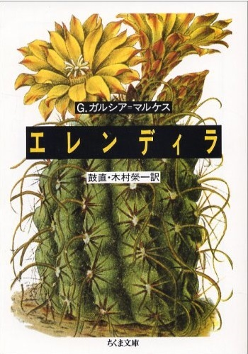
（著）ガブリエル・ガルシア=マルケス、筑摩書房、1988年12月1日
本作品の著者は、現代ラテンアメリカの大作といわれる『百年の孤独』『族長の秋』を書き上げている。今回の『エレンディラ』は、この大作の間に発表された作品であり、いうなれば三作品とも繋がりを感じる場面があるようだ。特に、本作品の『エレンディラ』は短編集であり、著者の特徴というべき、伝える民話の世界、伝統の世界と現代を繋げている作品である。つまり、物語の世界観は幻想的であるために、現代に置き換えたとき、何をいいたいのかについて、常に考えることが本作品を楽しめる手段になろう。最後に、すでにご存知かと思うが、1967年に出版した『百年の孤独』は、現代ラテンアメリカ文学の傑作といわれており、1982年にノーベル文学賞を受賞した作品である。それでは、短編集の中から、そのひとつを取り上げる。
～「大きな翼のある、ひどく年を取った男」より～
■あらすじ
「ひどく年を取った天使(※1)」がとても貧しい家に突然現れ、町中やその近郊まで大騒動となった。神父が尋ねてきたり、野次馬が沢山あつまってきたりしたことから、この家のベラーヨの妻エリセンダは妙案を思いつく。彼女は観覧料を取ることにしたのだ。
そのおかげで、家計は潤い、新築の家を建てることができるようになった。その後、数年が過ぎ、彼女は、天使の羽がほとんどなくなる瀕死の病人のように這いずりまわり、屋敷じゅうに出没する天使に対して頭に来ていた。一方、ベラーヨはそんな天使に対してはお情けで寝床を鶏小屋から掛け小屋にかえてあげた。上から毛布もかぶせた。このとき、ベラーヨは初めて天使が夜になると熱を出し早口で古代ノルウェー語で話す「うわごと」を聴いた。天使は最悪の冬を乗り越え、春になると元気を取り戻してきた。新しい羽が少しずつ生え始めてきた。その年の12月に入ったある日、彼女が昼食用のタマネギを刻んでいると空を飛ぶ練習をしている天使をみかけた。やがて、ぎこちない不安定な飛び方で、ひどく年を取った天使は空へ飛び立っていった。彼女は天使が見えなくなるまで見続けていた。
■面白い所と民話の普遍的な内容
Ⅰ
）天使にも「ひどく年を取った天使」が物語の中で存在したこと。
まるでこの短編集を書きあげた時代から現代社会を予測したような設定だ。なぜなら、これまで天使のイメージは子供だった。しかし、「ひどく年を取った天使」の存在は超高齢社会を連想させている。これは意図的ではないだろうが。
Ⅱ
）物語はハッピーエンドで終わっている。特別に面白いことではないが、民話的なエンディングは「終わりよければすべてよし」である。
物語の中では、これまで生活が苦しい一家の庭に、「ひどく年を取った天使」が突然現れたことで生活が豊かになったことはハッピーエンドである。
Ⅲ ）天使の役割は「幸せを運ぶ」というイメージを読者に再構築させている。
Ⅳ ）物語の中の天使には、光輪（オーラ）が表現されていないのは、不思議な気持ちになった。普通ならば天使は子供でオーラがついているのだが、この天使は、庶民的な天使だった。まるで、その意味は一時的でも、庶民の生活を知ることで何かに役立てるつもりであったのかもしれない。これは天使が悪いことをしないという性善説に立場に立って書いているからだ。
■考察
まず始めに、人は外見で判断してはいけないということだ。
よく世間では、第一印象がとても重要であることをいっているが確かにその通りであろう。
しかし、必ずしも100％
当てはまるわけではない。だからこそ頭の片隅には第一印象だけで決めてはいけないと考えるべきである。あくまで慎重に人物を見ていかなければならないと思う。たとえば、見た目がどんなにひどい人だとしても、言葉使い、立ち振る舞い、食べ方など、また会話をしてみて、約束事を反故にするときの大人の断り文句を聴くことで人間性を深く知ることができる。さらに一緒にいる時間が多くなればなるほど、より的確に人物像を把握できる。ここが観察点なのである。つまり、第一印象でほとんどは決まってしまうのであるが、最後の詰めは、ご自身で確認することが必要である。能ある鷹は爪を隠すという人物がいるかもしれない。さらに、もうひとつのたとえで申し上げれば、金持ちと成金の違いと同様であろう。金持ちは派手な生活はしないが、成金は派手な生活をする。どちらが悪いとかではなく、見た目だけで判断できないということを申し上げている。
第二点目になるが、「天使の存在、天使の力を信じることで、結果としてよいことが起こる」ということである。つまりは、人生の中で天使を見つけることが人生を幸せな状況に変えていけると考える。しかし、天使はどこにでもいるわけではない。だからこそ、人生の中でどのようにして探せばよいのかと考えてみる必要がある。たとえば、他人を慈愛の心で受け入れることにより、天使が自分の側に近づいてくるであろう。そのことで見つけることが容易になるかもしれない。運を引き寄せるということは、こういうことである。
第１６章：『クライマーズハイ』
（著）横山秀夫、文藝春秋、2003年8月21日
2003年に出版された横山秀夫氏の『クライマーズハイ』は、すでに読み終えている方も多いであろう。
本内容は、1985年の日航ジャンボ機の墜落をモチーフとして、地元の新聞社における組織の派閥抗争、メディアとしての姿勢を問いつつ、ひとりの人間としての倫理観、道徳観などを含めて、命の尊さを説いている。実に人間の生命というものを強烈に意識させる物語である。
また著者が元新聞記者だった経験に基づき描いているだけあって、事件に対する新聞社内部のやり取りを読むと、かなりの緊張感がある作品だ。
一方、主人公の生き方はサラリーマンならば、共感できるところが随所にある。
それは組織人として意に反しないことでも行うのか、さもなければ、自分に正直であった生き方を貫くのかということである。
最近私は、推理小説の題材は殺人事件であり、物語の中に埋められた解釈の論理と心理を読み取ることが楽しいとは思えなくなってしまった。つまり、殺人事件というテーマでない違うテーマから、人間の心理の葛藤や生き方を読み取るほうが楽しいのである。本作品は、著者によって、とても上手い筆致と構成から作品が作られている。このように主人公の人間性がよく描かれている作品は、読んでいる最中も人間として深く考えさせられるわけであり、それがとても面白いことなのである。
■あらすじ
地方の新聞社に勤める遊軍記者悠木は、部下を交通事故で失う。
この部下の死が悠木の心に残り、そのことをいつまでも引きずっていくことになる。
1985年の夏、悠木は、世界最大の航空事故（日航ジャンボ機墜落）に遭遇する。
本来ならば、その翌日に社内の友人である安西と谷川岳の衝立岩（ついたていわ）を登る計画をしていたが、悠木は全権デスクを任命されてしまう。
そして、安西とは二度と一緒に衝立岩を登れなくなってしまう。
なぜなら、安西はクモ膜下で倒れ意識不明になったからだ。
全権デスクとなった悠木は、日航ジャンボ墜落記事を紙面トップに掲載するために、現場へ記者を直行させ、墜落状況、墜落原因、遺族などの取材を記者へ指示していく。
なぜなら、地方紙が有利な情報（真実）を大手メディアより早く紙面トップに掲載するということが地元ならではの強み、すなわち情報の価値が、そこに存在するからだ。
と同時に、日航ジャンボ墜落の取材を自社のトップに掲載するためには、社内派閥と激しく対立をしていくことになる。しかし、いくら全権デスクと、いえども色々な派閥力学にて、記事をトップに掲載できなくなることが起こる。そのことが発生すると、悠木は、そのプライドを傷つけられ自己の力の無さを感じてしまう。こうした中、悠木はその後の自らの人生を左右するほどの大きなミスを起こしてしまう。それは、現場の記者が墜落原因をスクープしていたにもかかわらず、決定的な根拠がないという自らの判断でトップ記事にしなかった。その一方で、その現場の自社の記者がスクープした記事を大手新聞社がトップ記事として先に取り上げてしまったのだ。このことから悠木は、果たして自分は全権デスクとしてやっていけるのか？ と自問自答する。
ある日、亡くなった元部下の従兄妹の大学生が「命の重さの平等」について記事を掲載してほしいと要望してきた。文章を読むと、日航ジャンボ墜落で亡くなった人たちだけをメディアで取り上げるのではなく、他の事故で亡くなっている人たちは、同じだという「命の重さ」について書かれてあった。タイミング的には、この記事内容は、遺族を冒涜するような読者投稿に取られやすく誤解を与えるリスクが大であった。しかし、悠木は掲載を決心する。そして、掲載されたとき、購買読者からの多くの苦情が寄せられた。この掲載に対して社長が激怒した。そして悠木は、辞職するか、左遷となる草津行きかの選択を迫られた。悠木は、草津行きを選択し、そのまま退職まで過ごすこととなった。晩年、悠木は亡くなった安西のいった「クライマーズハイ」という言葉の意味を噛み締める。言葉の意味は、「降りるために登るのさ」と昔、語っていたこの言葉の意味である。クライマーズハイとは、登山家は興奮状態が極度に達すると恐怖感が無くなり気が付いたときには頂上にいることだった。が、安西は、ここで満足はしていなかった。家族のもとへ無事帰宅するこということ「降りる」という意味を含んでいたと考える。
一方、悠木は、「下りずに過ごす人生だって捨てたものではないと思う。生まれてから死ぬまで懸命に走り続ける。転んでも傷ついても、たとえ敗北を喫しようとも、また立ち上がり走り続ける。人の幸せとは案外そんな道々出会うものではないだろうか。クライマーズハイ。一心に上を見上げ、脇目も振らずにただひたすら登り続ける。そんな一生をおくれたいいと思えるようになった」つまり、悠木は、自分の人生を歩み始めたのである。
■構図
Ⅰ
）自己に正直な生き方（信念）VS組織人としての生き方（恭順）
Ⅱ
）会社の中の派閥の対立（社長派VS専務派）
Ⅲ
）事件に対する報道する側の立場と方法（大手メディアVS地方メディア）
■考察
まず始めに、人生は「クライマーズハイ」だと思われる。本書での本来の意味は、登山家は興奮状態が極度に達すると恐怖感が無くなり気が付いたときには頂上にいることを示している。しかし、安西のいった意味を読み解くと、頂上にいくまでにはかなり色々なことが起こっている。しかも、それらを乗り越えて純粋な気持ちで頂上を極めることへ挑戦している。この一途な思いは、自らの意思により行動をさせるのであり、安西は頂上を極めた後に無事命があり下山できることを優先して考え方えていたのである。 つまり、無事家族のもとへ帰宅できることが、その山を征服した満足感を達成できると考えたのではないだろうか？
視点を変えるならば、定年退職後は、家族と共にゆっくり過ごすことを考えていたのかもしれない。もしくは山登りを継続していくことなどを含んでいたのかもしれない。
一方、悠木の方は、「下りずに過ごす人生だって捨てたものではないと思う。生まれてから死ぬまで懸命に走り続ける。転んでも傷ついても、たとえ敗北を喫しようとも、また立ち上がり走り続ける。人の幸せとは案外そんな道々出会うものではないだろうか。クライマーズハイ。一心に上を見上げ、脇目も振らずにただひたすら登り続ける。そんな一生をおくれたいいと思えるようになった」といっている。
つまり、安西と悠木の人生に対する考え方・生き方はそれぞれ違った選択をしていることが理解できる。
安西は、主に家族のもとへ戻ることに重点を置いている。また、悠木は、人生に対して常に挑戦することに重点を置いていることが明白である。
第二点目になるが、俯瞰的に見て人生というものを考えると、本当に自分自身の思うようにはいかないものである。たとえ、社内組織で上司に気に入れられ出世できたとしても、それはあくまでも、社内における政治力の問題として捉えることだ。しばしば世間では、部長、役員になった人間を能力が高く優秀だという位置づけで考えているが、それは果たしてすべての人が本当に優秀なのであろうか？ という問いかけで考えてみたい。
現状では、取締役以上で実力がある人間は、昇格した人間の中でも二割くらいなのかもしれない。これには人間性も含んで考えておく必要がある。この理由にあることは、『2：8の法則』パレートの法則から考えてみたからだ。要するに二割しか能力のある人間はいないということを、そのままあてはめて考えてみた。そのことを物語る話として、誰が見ても公平に見て優秀であり出世をしていくならば、それは素晴しい実力者といえるが、この逆のケースがある。誰がみても能力がなく大失敗があり、本来ならば責任を取らされ降格しなければならないというケースで、逆に昇格していることがあるのだ。この場合、すでに会社は社員のためではなく、オーナー、もしくは時の社長が会社を私物化している可能性があるのではないだろうか？ さらに、会社の業績が悪くなるならば、通常、社長、役員が先頭を切って、給料カットをしていくことで、会社の利益を優先確保するべきであるが、これをやらない会社もある。もし本当に業績が悪く利益確保を優先したいならば、一般社員に対して会社の取締役たちは、責任を取るという強い姿勢を見せることで、いまを乗り切るまで一緒に頑張っていこうという姿勢を見せることが重要なのではないだろうか？ これは会社を一つにまとめる姿勢を示すこととなるわけである。クライマーズハイを読むと、上層部と戦う姿勢が貫かれている。この小説から学んだことは、自己に正直に生き抜くことである。だからこそ、正直に生きた結果、どこに居ようが、心構えがしっかりしていれば、人生の終わりには幸せを感じるとのことだ。そういう幸せの境地に早く達していきたい。
第１７章：『開国の使者～ペリー遠征記～』
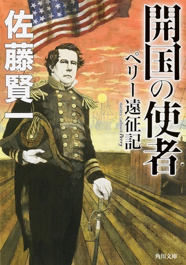
（著）佐藤賢一、KADOKAWA/角川書店、2014年4月25日
最近、私はこの著者の作品に夢中になって過去の作品を読破し始めている。
なぜなら、私が知らない西洋史に基づいたモチーフで物語が書かれていることに興味をもっているからだ。そして、私の読書の時間配分を考え、他の著者の作品を同時に読むことが楽しみなのだ。この著者について補足しておくが、デビュー当時は西洋史をモチーフにした歴史小説の作品が多かった。しかし、2006年に上梓した「女信長」から日本史をモチーフにした作品も書き始めている。
■あらすじ
1851年8月22日、英国で開催されたソレント沖のワイト島一周レースは、第一回万国博覧会の記念行事として行われた。外国船として唯一レースに参加したのは、米国の快速船アメリカ号であった。しかも、その米国の船が優勝したことで、米国は英国にも勝てる雰囲気となった。この快挙は、ペリー個人にも大きな刺激を与え、残りの人生のモチベーションを高めることになった。ちなみに、「アメリカス・カップ」は、この優勝により誕生した。
ペリーの正式名は、マシュー・カルブレス・ペリーという。父親のクリストファーペリーは海軍軍人であり、家族は四男三女であった。ペリーは、三男であった。海軍軍人として順調に出世したが、いま閑職となっている。
当時の米国の世界戦略は、アジアでも寄港地を探していたが、東インド艦隊は失敗した。しかもその艦長はペリーが指名した人物だった。この結果、ペリーに白羽の矢が立った。ペリーは艦長として、準備不十分な状態で米国を出発した。しかし、乗組員は優秀な部下を集めていた。たとえば、それぞれ、戦艦及び商船の造船工学、地質学、地理学、地球磁気学、言語学、服飾芸術・宗教学、疾病及び衛生法規・農学、物質供給統計学、昆虫学、鳥類学、動物学、貝類学、魚類学、磁気電信技術などの専門家たちであった。
中国上海に到着した。上海ではちょうど太平天国の乱の真只中であった。上海にいる国務省のマーシャルからは、米国人保護のために日本への遠征中止を強く要望されてしまった。しかし、ペリーは断り、二隻の蒸気船ミシシッピ号、サスケハナ号、二隻の帆船サラトガ号、プリマス号の四隻で日本へ向かった。ペリーは二段階にわけた日本遠征を考えていた。
日本の浦賀に到着した。幕府の役人からは海上から読み上げられた言葉にペリーが驚いたことはフランス語で綴られた文章だった。さらに驚いたことは、和蘭語通詞の堀達之助の拙い英語で和蘭（オランダ）語はできるといわれたのであった。このころから、ペリーは和蘭からの入れ知恵があったと推測した。幕府はすでに準備をしていた。幕府は従来のように長崎へいくことを進言した。
しかし、ペリーにとっては、長崎へいくことは意味がない。浦賀で国書を渡すことが開国させることと同等の意味があったからだ。幕府側からの態度は何も変わらないため、ペリーは、軍事演習や江戸湾の測量を始めた。圧力をかけたが戦争はする気は毛頭ない。この行動に幕府は考えた。プリンス・オブ・イワミ（浦賀奉行の石見守・井戸弘道）が出てきて浦賀にて親書受領書が発給された。その後、第一次日本遠征は終了した。
この米国の動きが仏蘭西（フランス）、露西亜（ロシア）への日本遠征を刺激した。他国の動きはペリーの神経を尖らせたが、露西亜はシーボルトの助言で長崎へ行ったことでペリーは少し安堵していた。第二次日本遠征は戦艦八隻であった。今回の訪問でペリーは幕府の態度が変わっていることを感じた。簡単にいえば、恫喝外交は通用しなくなっていた。
この理由をペリーは考えた。たとえば、和蘭の支援、露西亜を退けた自信などであったと分析した。ペリーと幕府との交渉場所は横浜になり、幕府高官であるハヤシ・プリンス・ダイガク（林大学頭）など通訳2名を含めて総勢5名であった。
ペリーの幕府への要望は以下であった。
Ⅰ
）補給
Ⅱ
）救助
Ⅲ
）通商
しかし、幕府側はⅢ
）通商以外は受け入れられることを明言した。この態度にペリーは、対等な国と国との対話をしていることに、アジア諸国の中では考えられない初めての応対に非常に驚いた。しかも、慇懃無礼な態度ではなく柔軟性をもった態度であった。
その後、幕府側からはあらかじめ準備をしていた7条からなる、英語、中国語、和蘭語で書かれた条約案が出されたことに、ペリーはさらに驚いた。結局、ペリーの強い要望が受け入れられ、最終的な13条からなる契約にて締結に至った。第2条、開港は、伊豆下田、松前、函館となり、その地で燃料や水食料補給などができるようになった。また、第9条、米国に片務的最恵国待遇を与えることになった。
これ以降、日本がどの国と条約を締結しようが米国と同様の条約内容となった。
■構図
Ⅰ
）ペリーVS米国政府
Ⅱ
）米国（ペリー）VS江戸幕府
Ⅲ
）米国VS英国、和蘭、仏蘭西、露西亜
■考察
まず始めに、江戸時代幕末を取り巻く日本をめぐる欧米列強の考え方は、日本には供給地確保としての位置づけであった。また、欧米列強も日本に対する情報を入手し分析して他国の動きを知り対策を立案していた。当時の江戸幕府では和蘭が一番有利であった。
第二点目になるが、徳川幕府の外交術というものは、対等な国同士の立場としての交渉で行われていた。しかも、当時もいまも外交は軍事力であるにも係らず、交渉にあたっては柔軟性をもって取捨選択をしながら柔軟な交渉を繰り返していたことは高度なテクニックだった。
第三点目になるが、現代は過去の歴史の上に成り立っており過去の歴史は否定できないということ。
つまり、明治政府成立後は江戸時代のすべてを否定していたが、必ずしもそうではなく、当時の世界的な状況の中に置かれた幕府は最善を尽くしていたと考えられる。また、たとえば、明治政府は江戸時代を否定するために廃仏毀釈などを行ってしまったわけであるが、同じ民族の文化を否定するということは、後世が見るとそれが本当に正しい行為であったことなのか疑問を与えかねないと考える。なぜなら、民族の歴史を破壊することは自らのアイデンティティを失いかねないと考えてしまうからである。
第四点目になるが、ペリー来航により江戸幕府が不平等条約締結をさせられたが、当時の米国から見ると不平等条約締結をしたこと自体それほど重要に考えられていなかった。
この背景には、ペリーがジャパン遠征記を作ろうとしていたがそもそも作家が集まらなかった。この理由としては、ニューヨークタイムスには一度もジャパン遠征など取り上げられたこともなければ、多くの新聞も取り上げていない。そもそもアメリカ人は、ジャパンという国も知らない、興味もなかったからだ。それより国内の大きな問題として黒人奴隷解放論争があった。したがって、ペリーは自らが中心となり書き上げることを最後の使命とした。しかも、ペリーはジャパン遠征後から体調をかなり崩していたが、遠征記を自ら製作することで寿命を縮めることは構わないと考えていた。
私の個人的な考えでいえば、ペリーが命を懸けてやり遂げたことの評価は個人にしか満足感を得られないかもしれないが、その成果は後世が必ず評価することになるということである。特に歴史的な意味をもつことが明白だからである。
第１８章：『書楼弔堂破曉 』
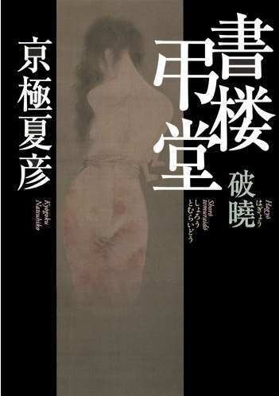
（著）京極夏彦、集英社、2013年11月30日
本作品の中に出てくる古本屋弔堂では、店主はお店を墓場と呼び、本(=墓)を売る事を「弔う」と呼ぶシステムだ。本作品の中ではかなり変わった古本屋として位置づけられているが、この古本屋へ来る人たちとのやり取りがとても面白い。それは、幕末から明治にかけての偉人たちばかりであり、そこから繋がる人間関係にて登場する人物とのエピソードがとても面白く描かれているからだ。私が本作品と出会えてよかったと思えることは、本とどのように付き合っていけばよいのか、ということを改めて理解できたことだ。
■あらすじ
本作品は探書壱～陸までの短編6編から成り立っている。
各短編の物語は以下の展開となっている。基本的な物語は古今東西の書物が集められた古本屋である書桜弔堂に幕末から明治初期にかけて、著名な人物が自ら読みたい書物を探し求めに来る。そして、各短編の終わりには必ず「誰も知らない」という言葉で締めくくられているわけだ。たとえば、各短編は以下の主な歴史上の人物が取り上げられている。
Ⅰ
）探書壱 臨終：最後の浮世絵師月岡芳年
Ⅱ
）探書弐 発心：尾崎紅葉に師事した作家泉鏡花
Ⅲ
）探書参 方便：お化け博士、妖怪博士の井上円了
Ⅳ
）探書肆 贖罪：幕末明治期の英学者中浜万次郎と幕末の人斬り岡田以蔵
Ⅴ
）探書伍 闕如：近代児童文学の開拓者巌谷小波
Ⅵ
）探書陸 未完：狂言廻し役の高遠彬（語り手）
■印象に残った言葉
Ⅰ
）探書壱 臨終には、「本とは内容に価値があるのではなく読むと云う行いに因って読む人の中に何かが立ち上がること。そちらのほうに価値がある」
Ⅱ
）「本当に大切な本は、現世の一生を生きるのと同じほどの別の生を与えてくれる。その大切な本にめぐり合うまで、人は探し続ける」
Ⅲ
）探書肆 贖罪には、生きることの大切さが書かれている。
「人がなぜ生きているのかを知るべきです。高慢な思想をもつのもいいでしょう。義も忠も礼も孝も政治ももちろん大切なことでしょう。しかし、それ以前に息を吸って吐いて、物を食って糞して血をめぐらせているからこそ人はこうして生きている」
Ⅳ
）探書陸：未完には「人間は死ぬまで未完のままである」
■構図
Ⅰ
）読書をして影響を受ける人間VS読書をして影響を受けない人間
Ⅱ
）生VS死（大きなテーマ）
Ⅲ
）人間の完成VS人間の未完
■考察
まず始めに、本作品のテーマは「人との繋がり」であるが、人生とは単純に考えると人との出会いの繰り返しの連続である。たとえば、人生で出会った人たちの中で、プライベートまで長く頻繁に会って付き合いができる人はそう簡単には存在しない。
もしそのような方が身近に存在するならば、その人はもしかするともう一人の自分なのかもしれないと考えられないだろうか？つまり、人にはミラー効果があり、いい方を換えれば、類は友を呼ぶ。自分を取り囲む仲間は自分と近い環境（思想も含む）、さもなければ同じ生活レベルにいる人たちということになるのだろう。
さらに、人間は常に平等であり、お互いに尊敬の気持ちをもたないと付き合うことができないと考える。仕事関係でも社内でも、依頼者だからだと威張るような、恫喝政治を行う人が存在することがあるが、そういうことで人を支配する人たちは必ず最後は悲惨な人生で生涯を閉じている。やはり、人間として相手の気持ちも配慮しながら、気持ちを伝え、気持ちよく動いていただけることを常に考える気持ちももてなければ、人は幸せと思えなくなり、その場を離れていくことになるだろう。つまり、人生の幸せとは、すべて人間関係が基本で、そのことが円滑になるためにどうするのかということになる。たとえば、一緒に同じ時間を楽しむこと、物事（プロジェクト）を達成させることなどが考えられる。最後になるが、人間は死ぬまで人との出会いがあるからして、相手に与えながら、信頼関係を構築していくことが重要になるのだろう。
第二点目になるが、自分にとってよい本とは何か？ ということは、読むことで自身が立ち上がるものをもてるのか？ ということが重要である。
たとえば、よい本との出会いは、人生の出会いのようなものである。この出会いを求めて探し続けることが重要であり出会えるわけである。まるで人生の旅人のようなものである。
また、過去に読んだ本を再読したいと思うかどうかは、そのときどきの自身のおかれた環境による。
つまり、これを人生に置き換えてみると、人と再会をするためには自身が置かれた環境が必要となる。たとえば、同じ時間や空間を共有することにより過去の出会いが再現できるわけであり、同窓会、OB会などがその場所となるのはこういうことである。
また、視点を変えて人の出会いということで考えてみると、人間の出会いに影響する要因として考えられることは以下であると推測する。
①
ご先祖様の力
②
両親の力（職種、人脈など）
③
自身の努力（出身校、就職先、自己啓発、人脈など）
目に見えない力とは、ご先祖様や両親の力が人を繋いでいくような縁を作っている。つまり、その見えない力によって仲よくできる人間が紹介され、その人の人生に影響を与えていく。
ちなみに、私自身のことで恐縮であるが50歳を超えて亡くなった父親の影響を初めて感じた経験をもった。それは目に見えない力であり不思議な出会いの連続をいまでも体験している。
参考文献
・第１１章：『官賊と幕臣たち～列強の日本侵略を防いだ徳川テクノクラート～』
(※1)Wikipedia「小栗上野介忠順について」より
・第１２章：『血の轍』
(※1) Wikipediaマックス・ウェバー「職業としての政治」より
・第１５章：『エレンディラ』
(※1)wikipedia「天使」より
おわりに
読者諸兄におかれましては、私の書いたものをご一読して頂きまして誠に有難うございました。勝手ながらこれからの人生に少しでもお役に立てられることになれますことを心より願っております。人生はどこでどのようになるのかわからないものでありますが、私がこれまで読んだ本からも、人は運命に大きく翻弄されているわけであり、先人たちの生き方をみても明白であります。私の人生を語っても仕方ありませんが、振り返ってみますと、たとえ歴史上に名を残さなくても、小さいなりの運命に翻弄されて生きてきたと思っております。従いまして、これからの人生も小さいなりの運命に翻弄されていくものと考えておりますが、兎に角、どのような状況におかれましても前向きに生きること、健康にも注意をすること、そして、天寿が訪れるまで頑張って生きていくつもりでございます。なぜこのようなことをあえて書いているのかと申し上げますと、今年の五月に私の幼馴染みが亡くなったからであります。亡くなった彼の分まで私が長生きをすることで幼馴染のご冥福をいつまでも祈り続けたいと心から考えております。それでは最後になりますが、勝手ながらに著名な作家の作品に対して、この電子書籍の中にある考察の中で、もし大変失礼なことを書いてしまいご迷惑をおかけしたり、また、著者の意図と大きく乖離したりしているようなことがございましたら、事前にこの場をおかりして心よりお詫び申し上げます。さらに、私のデビュー作品にご協力とご尽力を頂きました有限会社イー・プランニング社須賀柾晶氏に心より感謝申し上げます。
平成29年5月6日
北軽井沢より
井戸深志（いどふかし）
1959年1月生まれ。大学卒業後、外資系大手製薬会社に入社、主に都内の大学病院を担当する。その後医薬品専門の広告会社に勤務。当時、世界最大の広告会社オムニコムグループの医薬品広告会社日本法人設立メンバーとして貢献。また、CRO（医薬品開発業務受託機関）時代には、ジェネリック医薬品の世界最大企業TEVA日本法人設立に携わる。さらに、某CROをプラントエンジニアリング会社日揮（株）への売却をコーディーネートした異色な経験を持つ。そして、医薬品医療機器サービス会社を経て、現在再生医療のベンチャー企業に勤務。日本の再生医療とリアルワールドデータビジネスの発展のために新しいビジネスに挑戦中である。
その一方で、書評活動は2015年からスタート。名作（小説）の中での主人公の立場、心理などを現実の世界に置き換え、日常の生活の中で、また、社会人としてどのように考えるべきなのかなどの視点に立って、人生の中で何かに悩んでいる人々に向けて「人生の羅針盤」となるようにわかりやすく書くことを心がけている。読者からは「紹介された本との出会いが、人生を変えるきっかけになる」「新たな気づきを発見できる」「読み進めるほど引き込まれる」など、高い評価を得ている。
趣味：バンド活動（コピーバンドにてベース＆
ボーカルを担当。ジャンルはジャズ、ヘビメタ、ロック、JPOP、フュージョン、ボサノバ、アニソン、プログレなどを演奏）、読書、物書き、音楽鑑賞、美味しいものを食べること、幹事をすること（最近は年を重ね面倒）、人との出会い（特に業界が違う人の話を聴くこと）、DugかG7で飲む時間。
モットー：生きている時間の中でやりたいことを具現化する。人生の残りの時間を有効活用すること（使命を考えること）。老後は楽しい時間を過ごすこと。
興味あること：日進月歩の再生医療、リアルワールドデータ
書名 『「人生の意味」を教えてくれるお薦めの名作１８選』
著者名 井戸深志
発行 プラスワン・パブリッシング
〒
102-0083 東京都千代田区麹町4-8 麹町高善ビル2Ｆ
著作権 (c) ido fukashi,2017
電子書籍発行日 2017年7月
電子書籍制作会社 有限会社イー･プランニング
※電子書籍の制作依頼・お問い合わせは、eplan@khaki.plala.or.jp
まで。